2026-03-16
Zhuolin Yang*，Zihan Liu*，Yang Chen*，Wenliang Dai*，Boxin Wang*，Sheng-Chieh Lin，Chankyu Lee，Yangyi Chen，Dongfu Jiang，Jiafan He‡，Renjie Pi，Grace Lam，Nayeon Lee，Alexander Bukharin，Mohammad Shoeybi，Bryan Catanzaro，Wei Ping*†
我们推出 Nemotron-Cascade 2，这是一款开放的 30B MoE 模型，具有 3B 激活参数，提供同类最佳的推理能力和强大的 agent 能力。尽管规模紧凑，它的数学和代码推理性能已接近前沿开放模型。它是继 DeepSeek-V3.2-Speciale-671B-A37B 之后，第二款在 2025 年国际数学奥林匹克竞赛（IMO）、国际信息学奥林匹克竞赛（IOI）和 ICPC 世界总决赛中达到金牌水平的开放权重 LLM，以少 20 倍的参数展现出极高的智能密度。与 Nemotron-Cascade 1 相比，关键技术进展如下。在经过精心整理的数据集上完成 SFT 后，我们大幅扩展 级联 RL，使其覆盖更加广泛的推理和 agent 领域。此外，我们在整个 级联 RL 过程中，引入来自各领域最强中间教师模型的 MOPD，使我们能够高效恢复基准性能回退，并在整个过程中持续获得强劲的性能提升。我们发布模型 checkpoint 与训练数据的合集。
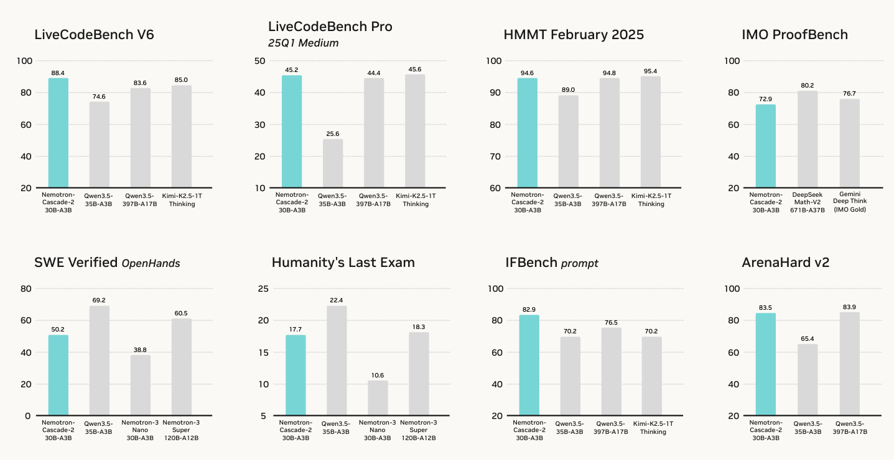
* 同等贡献，作者按名字的字母逆序排列。
‡ 作为 IMO 2015 金牌得主，对模型生成的 IMO 2025 解答进行审查与评分。联系邮箱：jiafanhe19@ucla.edu。
† 项目负责人。联系邮箱：wping@nvidia.com。
© 2026 NVIDIA。保留所有权利。
arXiv:2603.19220v2 [cs.CL]，2026 年 3 月 22 日。
强化学习（RL）（Guo et al., 2025；Ouyang et al., 2022）已成为 LLM 后训练的基石，推动了推理、agent 能力以及现实问题解决能力的进步。随着模型被赋予越来越复杂的要求，首要挑战在于成功整合更加广泛的 RL 环境，以及非常多样化的推理与 agent 任务。将 RL 扩展到涵盖多方面的现实应用，需要能够处理不同奖励信号和复杂环境反馈、又不破坏训练过程稳定性的稳健框架。
我们此前的工作 Nemotron-Cascade 1（Wang et al., 2025）提出了 级联 RL，这是一个跨专门任务领域编排顺序式、按领域进行 RL 训练的框架。级联 RL 显著简化了多领域 RL 的工程复杂性，同时在广泛的基准上取得最先进的性能。级联 RL 的优势有三点。第一，针对特定领域的 RL 阶段具有显著抵抗灾难性遗忘的能力。它们很少降低先前领域已获得的基准性能，甚至可能提升这些性能。第二，它允许针对每个特定领域仔细定制 RL 超参数与训练课程，从而优化学习动态并改善最终性能。第三，每个 RL 阶段内任务的同质性也带来大量计算节省，因为与多个领域联合训练相比，同一领域内的响应长度与验证实际耗时更加一致。
在本工作中，我们推出 Nemotron-Cascade 2，这是一个具有 3B 激活参数的开放 30B MoE 模型。与其前代类似，Nemotron-Cascade 2 在高优先级领域进一步扩展 级联 RL，以保留按领域训练的优势，使我们能够将关键领域的推理性能极限推进至最先进水平。此外，我们将 OPD（Xiao et al., 2026；Zeng et al., 2026）融入 级联 RL 训练阶段。通过在 级联 RL 过程中，从每个特定领域中表现最好的中间教师模型蒸馏知识，这一机制有效恢复了在越来越复杂的 RL 环境中训练时可能发生的任何基准性能回退。此外，我们还针对响应格式相似、验证成本相当的任务组，将多领域 RL 融入 级联 RL，允许这些任务联合训练，从而扩展至更多 RL 环境，并在跨任务干扰很小时提高训练效率。
我们的 Nemotron-Cascade-2-30B-A3B 在数学和代码推理方面取得突破性表现，尽管只是一个 30B MoE 模型，仍在 2025 年国际数学奥林匹克竞赛（IMO）和国际信息学奥林匹克竞赛（IOI）中均取得金牌成绩1，同时在包括对齐、指令遵循、长上下文（例如 1M 上下文窗口）和 agent 任务在内的广泛基准上，提供同类最佳性能。完整结果见表 1。我们全面开源模型权重、训练数据与方法细节，使研究社区能够复现、分析并扩展所提出的 级联 RL 训练范式。
本报告其余部分组织如下。§2 总结主要结果。§3 描述 SFT，并详细介绍数据整理。§4 展示与 MOPD 相结合的 级联 RL 框架。§5 详细介绍 IMO 的评估设置与结果，而 §6 展示 IOI 和 ICPC 世界总决赛的评估设置与结果。
我们在一套全面的基准上评估 Nemotron-Cascade 2，涵盖数学与代码推理、知识与 STEM、对齐与指令遵循、长上下文理解与上下文学习、多语言能力以及 agent 任务。主要结果见表 1，基准及详细评估设置见附录 A。
1 我们的模型是继 DeepSeek-V3.2-Speciale-671B-A37B（Liu et al., 2025）之后，第二款在 IMO 和 IOI 两项竞赛中均达到金牌表现的开放权重 LLM。
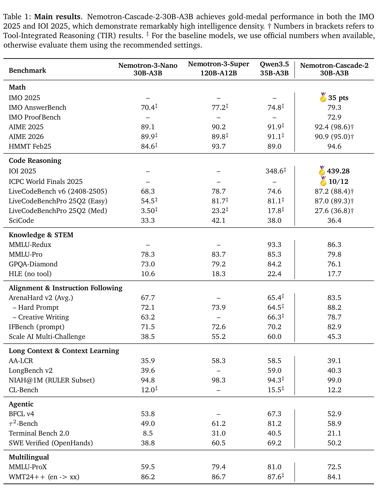
从表 1 可以看出，Nemotron-Cascade-2-30B-A3B 优于最新发布的 Qwen3.5-35B-A3B（2026-02-24）（Qwen Team, 2026）和规模更大的 Nemotron-3-Super-120B-A12B（2026-03-11）（Blakeman et al., 2025），并在数学、代码推理、通用对齐和指令遵循的各项基准上取得同类最佳性能。
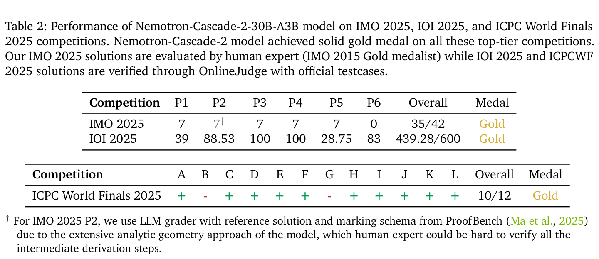
值得注意的是，尽管仅为 30B MoE 模型，Nemotron-Cascade 2 在 IMO 2025、IOI 2025 和 ICPC 世界总决赛 2025 中均达到金牌水平，而这样的结果此前被认为只有前沿闭源模型（Gemini Team, 2025）（即 Gemini Deep Think）以及前沿规模的开放模型（Liu et al., 2025）（即 DeepSeek-V3.2-Speciale-671B-A37B）才能实现。模型的详细表现报告于表 2。对于 IMO 2025，模型生成的解答以及人类专家的审查和评分见附录 E。
Nemotron-Cascade-2-30B-A3B 还在几乎所有基准上优于 Nemotron-3-Nano-30B-A3B，尽管两者都是从同一个预训练模型 Nemotron-3-Nano-30B-A3B-Base（NVIDIA, 2025）进行后训练得到的。该结果进一步证明了我们 级联 RL 加 MOPD 训练流水线的有效性。在知识密集型与 agent 基准上，它不如 Qwen3.5-35B-A3B，这凸显了未来工作中更强的知识密集型预训练和 agent RL 的重要性。
本节描述 SFT 的训练框架与数据整理过程，这是后训练流水线的第一阶段。该阶段赋予模型基础能力，包括推理、对话能力、指令遵循，以及 agent 和软件工程技能。
我们的 SFT 数据涵盖广泛领域，包括数学、编程、科学、工具使用、agent 任务和软件工程，以及多轮对话、知识密集型问答、创意写作、角色扮演、安全和指令遵循等更通用的领域。
我们将所有 SFT 样本打包成最长 256K token 的序列，并在单个阶段中训练模型。经验上，我们发现 SFT 模型在约 1.5 个 epoch 后达到最佳性能。SFT 训练超参数见附录 B。
聊天模板见图 1。与 Nemotron-Cascade（Wang et al., 2025）相比，聊天模板有两处改动。第一，为了简化，我们移除 /think 和 /no_think 标签。第二，我们在开头添加一个空的 <think></think> 块，以激活非思考模式。
对于工具调用任务，我们在系统提示的 <tools> 和 </tools> 标签中指定所有可用工具，
（接下页。）
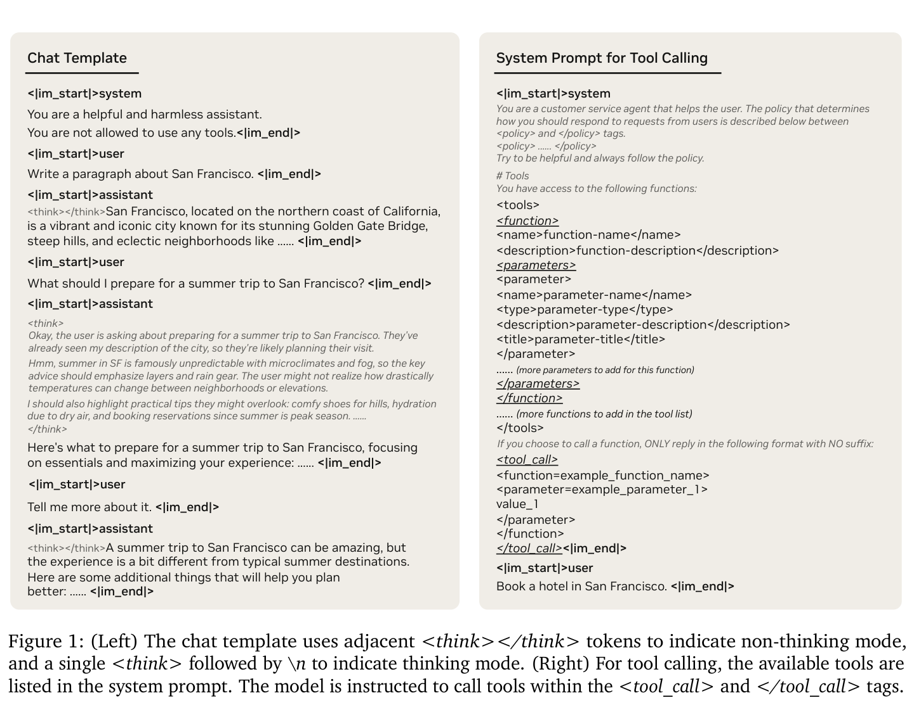
（续上页）并指示模型执行由
我们的非证明数学提示主要来自 Nemotron-Cascade（Wang et al., 2025）和 Nemotron-Math-v2（Du et al., 2025），从中收集 1.8M 个工具调用（即 python）样本与 1.9M 个非工具样本，其响应分别由 DeepSeek-V3.2 与 DeepSeek-V3.2-Speciale（Liu et al., 2025）生成。此外，我们从 Nemotron-3-Nano（Blakeman et al., 2025）的生成—选择类别（无工具调用）中收集 676K 个样本，响应由 GPT-OSS-120B（Agarwal et al., 2025）生成。竞赛数学 SFT 总共包含 1.8M 个工具调用样本和 2.6M 个不使用工具的样本。
对于数学自然语言证明，我们从 Nemotron-Math-Proofs-v1（Du et al., 2025）的 AOPS 子集中收集 98K 道数学证明题。我们使用 DeepSeek-V3.2-Speciale（Liu et al., 2025）为每道题生成多个样本，覆盖证明生成（410K）和证明验证（400K）两项能力，总计得到 816K 个样本。
在 Nemotron-Cascade 1（Wang et al., 2025）的基础上，我们从若干开源数据集整理约 165K 个独特的编程提示，包括 OpenCode-Stage2（Huang et al., 2024）、OpenCodeReasoning（Ahmad et al., 2025）和 HardTests（He et al., 2025）。这些提示最初来源于 Codeforces、AtCoder、AIZU 和 CodeChef 等竞赛编程平台。为了提升提示的多样性，并
（接下页。）
（续上页）减少 SFT 训练集中的冗余，我们通过两种方法实施严格去重：（1）样本输入/输出指纹；（2）基于 n-gram 的文本分析。该过程移除了约 24.2% 的自重复编程提示。
由于 GPT-OSS-120B（Agarwal et al., 2025）具有强大的代码推理能力，我们选择它作为 SFT 教师模型。对于每个具有可验证测试用例的编程提示，我们对教师的推理轨迹进行正确性过滤，仅保留生成正确代码的轨迹。对于没有可验证测试用例的提示，我们通常选择较长的推理轨迹，假设它们反映了更加充分的问题分析。该流水线最终得到用于竞赛编程的数据集，包含 1.9M 条 Python 推理轨迹、1.0M 条 C++14 推理轨迹和 1.3M 条 Python 工具调用推理轨迹。
科学编程：我们进一步收集覆盖生物学、材料科学、物理学、化学和数学领域的科学研究编程提示。这些提示的响应由 GPT-OSS-120B（Agarwal et al., 2025）生成，总计得到 1.1M 个 SFT 样本。
我们收集的科学提示涵盖物理学、化学和生物学。我们使用来自 Nemotron-Cascade（Wang et al., 2025）的 1.4M 个科学 SFT 样本，以及来自 Nemotron-3-Nano（Blakeman et al., 2025）的另外 1.3M 个样本。两个数据集中的响应均由 GPT-OSS-120B（Agarwal et al., 2025）生成。
我们采用 Nemotron-3-Nano（Blakeman et al., 2025）的 160K 条长上下文 SFT 数据，平均序列长度为 128K token。此外，我们从 ChatQA-2（Xu et al., 2024）另收集 74K 条长上下文 SFT 数据，平均长度为 29K token。
我们从 Nemotron-Cascade 1（Wang et al., 2025）获取提示，并构建 4.9M 个开启推理的样本和 372K 个关闭推理的样本。开启推理样本的响应由 GPT-OSS-120B（Agarwal et al., 2025）生成。对于关闭推理的样本，300K 条响应取自数据集本身的高质量标注短答案，另外 330K 条由 DeepSeek-V3-0324（Liu et al., 2024）生成，以改善响应质量。
为了提升多轮对话能力，我们通过两个 GPT-OSS-120B（Agarwal et al., 2025）实例的角色扮演设置，合成约 700K 个多轮对话样本，其中一个实例扮演用户，另一个扮演助手。用户侧模型可以随时终止对话，以避免重复交流。
我们还纳入来自 Nemotron-3-Nano（Blakeman et al., 2025）的 4.6M 个开启推理的聊天样本，提示来自 LMSYS（Zheng et al., 2023）和 WildChat（Zhao et al., 2024）。响应由 GPT-OSS-120B（Agarwal et al., 2025）、Qwen3-235B-A22B-Thinking-2507 和 Qwen3-235B-A22B-Instruct-2507（Yang et al., 2025）生成。
我们从 Nemotron-Cascade 1（Wang et al., 2025）获取提示，使用 GPT-OSS-120B（Agarwal et al., 2025）生成约 230K 条开启推理的响应，使用 DeepSeek-V3-0324（Liu et al., 2024）生成 64K 条关闭推理的响应。此外，我们纳入来自 Nemotron-3-Nano（Blakeman et al., 2025）的 497K 个指令遵循样本，包括 457K 条开启推理的响应和 40K 条关闭推理的响应。这些响应由 GPT-OSS-120B（Agarwal et al., 2025）、Qwen3-235B-A22B-Thinking-2507 和 Qwen3-235B-A22B-Instruct-2507（Yang et al., 2025）生成。
我们从 Nemotron-3-Nano（Blakeman et al., 2025）收集 4K 个安全 SFT 样本，使模型在遇到不安全输入时表现出恰当的拒绝行为。这些 SFT 提示最初来自 Nemotron Content Safety v2（Ghosh et al., 2025）、Gretel Safety Alignment v1（gre, 2024）、Harmful Tasks（Hasan et al., 2024）和 Red-Team-2K（Luo et al., 2024）。
除用于数学和代码推理的 Python 工具使用数据之外，我们还收集多轮对话场景中的工具使用样本；在这些场景中有多个可用工具，助手必须确定调用哪些工具，以及如何有效使用它们。我们从 Nemotron-3-Nano（Blakeman et al., 2025）收集 822K 个对话工具使用样本，响应由 Qwen3-235B-A22B-Thinking-2507、Qwen3-32B、Qwen3-235B-A22B-Instruct-2507（Yang et al., 2025）和 GPT-OSS-120B（Agarwal et al., 2025）生成。
我们使用多种 agent 框架整理软件工程（SWE）数据，包括 OpenHands（Wang et al., 2025）、SWE-Agent（Yang et al., 2024）、Mini-SWE-Agent，以及 Wei et al.（2025）提出的无 agent 框架，以提升模型的 agent 软件工程能力。首先，我们使用 Nemotron 3 Nano（Blakeman et al., 2025）和 Super（Blakeman et al., 2025）的数据，其中包含通过 Qwen3-Coder-480B-A35B-Instruct（Yang et al., 2025）生成的 SWE agent 轨迹。问题实例来自 SWE-Gym（Pan* et al., 2025）、SWE-rebench（Badertdinov et al., 2025）和 R2E-Subset（Jain et al., 2025）。其次，我们使用 Nemotron-Cascade 1（Wang et al., 2025）的 SWE 无 agent 数据，其中包含三项主要任务：（1）缺陷代码定位；（2）代码修复；（3）测试用例生成。遵循 Wang et al.（2025）中已建立的流程，我们使用 DeepSeek-V3.2（Liu et al., 2025）重构代码修复数据。
初步研究表明，纳入 SWE 无 agent 数据能够提升模型在 SWE agent 任务上的有效性。例如，仅在 agent 数据上微调达到 Pass@1 48.9、Pass@4 62.8，而在 agent 与无 agent 数据组合上微调，在使用 OpenHands 的 SWE-bench Verified 上将性能提升至 Pass@1 49.9、Pass@4 65.2。基于这一观察，我们将 125K 个 agent 样本和 389K 个无 agent 样本结合，作为 SWE 任务的 SFT 数据。模型在 SWE agent 数据上以非思考模式训练，在 SWE 无 agent 数据上以思考模式训练。
为了提升终端使用的 agent 能力，我们采用 Terminal-Task-Gen 方法（Pi et al., 2026）整理训练任务。该框架由以下部分组成：（1）将静态数据转为交互式终端格式的数据集适配器；（2）从多样化种子提示和结构化终端技能分类体系生成的合成任务。通过该框架，我们总共整理 490K 个样本。具体而言，我们首先从现有高质量来源（Wang et al., 2025）改编 162K 个数学、32K 个代码和 32K 个 SWE 专用样本，以建立广泛的基础覆盖。为了进一步改善针对性的技能精炼，我们合成 120K 个基于种子的任务和 140K 个基于技能的任务。对于轨迹构建，我们利用上述整理的任务，并以 DeepSeek-V3.2（Liu et al., 2025）为核心引擎，通过隔离 Docker 环境中的执行反馈循环生成逐步解题轨迹。Terminus 2 agent 框架（Merrill et al., 2026）充当底层框架与工具使用协议，使模型能够与终端交互并完成复杂任务。
沿用与 Nemotron-Cascade 1（Wang et al., 2025）相似的方法，我们将级联强化学习（级联 RL）作为后训练流水线。具体而言，我们在 级联 RL 过程中整合了 MOPD。
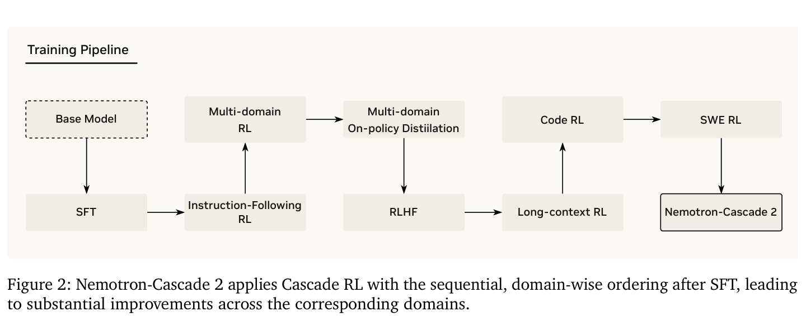
图 2 展示了我们的训练过程。在本工作中，我们以 IF-RL（§4.2）开启 级联 RL 过程，建立基础性的指令遵循能力，随后进行多领域 RL（§4.3），以提升模型的工具调用能力、STEM 推理和响应格式遵循能力。之后转向 MOPD（§4.4），将专门领域的知识统一至单一、连贯的策略，以缓解性能下降。接下来，我们进行用于人类对齐的 RLHF（§4.5）、用于提升超长输入序列推理的长上下文 RL（§4.6）、用于竞赛编程问题的代码 RL（§4.7），最后进行 SWE RL（§4.8），以掌握 agent 软件交互。
级联 RL 流水线各阶段的最佳顺序并非普适常量，而是模型底层行为和学习轨迹的动态函数。与最初的 Nemotron Cascade（Wang et al., 2025）相比，本工作 Nemotron-Cascade 2 显著改善了 SFT 数据质量，并大幅扩展了 RL 环境和任务的复杂度。这些进展从根本上改变了模型的行为动态，要求我们采用不同的顺序，以更好地适应 LLM 不断演进的能力。
经验法则：缓解领域间干扰。具体来说，这一顺序的依据主要是：当模型与越来越多样化的环境交互时，需要缓解灾难性遗忘。级联 RL 提供了一种细粒度视角，使我们能够观察特定领域如何竞争或冲突，例如 IF-RL 中的严格指令遵循与 RLHF 中的人类偏好对齐。我们的核心设计原则是，找到能够最大限度减少跨领域负面干扰、同时充分优化最高优先级领域的顺序。通过识别哪些任务充当基础先验、哪些任务充当专门化精炼，我们能够缓解领域间干扰。
通过多领域整合进行扩展。遵循这一原则，当发现特定领域之间不存在冲突或有益于整体性能时，级联 RL 流水线便可纳入多领域 RL 阶段。随着 RL 环境和数据集复杂度增长，这种整合方法尤其有效，同时能够保证模型在各种基准上维持广泛的性能表现，详见 §4.3。
通过 OPD 实现稳定。此外，我们发现 MOPD（§4.4）是这一顺序中至关重要的稳定节点。它能够有效恢复在级联 RL 较早、更加专门化的阶段中可能回退的基准性能，从而得到更加平衡和稳健的最终策略模型。
在整个 级联 RL 过程中，我们沿用 Nemotron Cascade（Wang et al., 2025），使用 GRPO 算法（Shao et al., 2024）进行严格的 on-policy 训练。我们采用 on-policy 训练，以改善稳定性并获得更高准确率。训练使用 Nemo-RL 仓库（NVIDIA, 2025）进行。
每次迭代，我们从当前策略 \(\pi _{\theta}\) 生成一组 \(G\) 条 rollout，随后进行一次 gradient 更新。这确保了数据收集所使用的策略始终与正在更新的策略一致，使重要性采样比率恰好为 1。这一 on-policy 设置有助于稳定 RL 训练并缓解熵坍缩。此外，我们完全移除 KL 散度项，从而将 GRPO 目标简化为具有组归一化奖励和 token 级损失（Yu et al., 2025）的标准 REINFORCE 目标（Williams, 1992）：
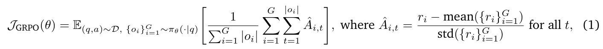
其中，\(\{r_{i}\}^{G}_{i=1}\) 表示：对于从数据集 \(\mathcal{D}\) 中抽取的给定问题 \(q\)，分配给采样响应 \(\{o\}^{G}_{i=1}\) 的 \(G\) 个奖励；在 RLVR 中，这些响应相对于真实答案 a 进行验证。对于 RLHF，\(r_{i}\) 是 GenRM 针对响应 \(o_{i}\) 与问题 \(q\) 给出的聚合奖励分数。不同领域奖励函数的细节将在相应小节中介绍。
本小节描述指令遵循 RL 方案，它是 级联 RL 的第一阶段。我们证明，应用可验证的 IF-RL 能够显著改善指令遵循，在 IFBench（Pyatkin et al., 2025）上达到最先进的 83.13% 准确率。
我们使用与 NVIDIA Nano-v3 后训练（Blakeman et al., 2025）相同的指令遵循训练数据。该数据集的指令被设计为可以客观验证，例如要求响应少于 200 个词。这使该数据集非常适合用于训练和评估模型的严格遵循能力。由于数据的基础质量已经很高，我们的整理过程主要解决某些指令类型（例如 count_increment_word）的关键字参数中的格式不一致问题。
遵循 Wang et al.（2025），我们也应用动态过滤（Yu et al., 2025）。该技术会过滤所有 rollout 全部正确或全部错误的样本。动态过滤确保 batch 中每个提示都提供有效 gradient，从而稳定 IF-RL 训练，并提高模型性能的上限。此外，我们观察到延长 IF-RL 训练可能造成过多 token 使用，而对于通用聊天领域中的特定约束，这往往没有必要。为此，我们应用超长惩罚，对在最大序列长度内未完成生成的样本给予零奖励。
与 Nemotron Cascade（Wang et al., 2025）不同，我们将 IF-RL 放在 级联 RL 训练的第一阶段，主要出于两点原因：（\(i\)）IF-RL 可能对人类对齐能力（例如 ArenaHard）造成负面影响，而后续基于 GenRM 的 RLHF 对指令遵循分数的影响可以忽略。通过首先优先处理指令遵循，我们能够专注于最大化指令遵循性能，然后使用后续阶段恢复并精炼人类偏好对齐。（ii）早期的 IF-RL 阶段得到具有更优指令遵循能力的模型，为后续 MOPD 提供强大的教师。与 Nemotron Cascade（Wang et al., 2025）的另一项区别是，我们的 IF-RL 只在“思考模式”下训练，不引入 RM。我们发现，
（接下页。）
（续上页）“思考模式”在指令遵循基准（例如 IFBench（Pyatkin et al., 2025））上获得更高准确率。由于后续 RL 阶段会恢复 IF-RL 期间引入的任何人类偏好对齐性能回退，我们能够完全专注于最大化指令遵循，而不承担辅助 RM 的计算开销。
我们使用 128 的 batch 大小，每个提示采样 16 条响应，temperature 为 1.0，top-p 为 1.0。使用 AdamW（Kingma, 2014），学习率为 3e-6，熵损失系数和 KL 损失系数均设为 0。采用动态过滤的 IF-RL 约进行 180 步。完整超参数见附录 B。
在 IF-RL 之后，我们进行额外的多领域 RL 阶段，覆盖三项能力：STEM 领域的多项选择问答（MCQA）、agent 工具调用，以及用于指令遵循的结构化输出。数据集取自 NVIDIA Nano-v3 RL 训练混合数据（Blakeman et al., 2025）。数据混合中约 55% 为 MCQA，30% 为使用 Workplace Assistant 设置（Blakeman et al., 2025）的 agent 工具调用，15% 为结构化输出。
我们将这些领域分组至单个多领域 RL 阶段，主要有两点原因。第一，在混合领域上训练时，我们没有观察到各评估基准的性能下降。相反，模型在 MMLU-Pro、τ2-Bench 和 IF-Bench 等基准上持续提升。第二，这些数据集的响应长度和验证时间相似，能够最大限度减少等待更长生成或更慢环境验证造成的训练低效。
训练期间，我们使用 128 的 batch 大小，每个提示采样 16 条响应，temperature 为 1.0，top-p 为 1.0（见附录 B）。使用 AdamW（Kingma, 2014），学习率为 \(3 \times 10^{-6}\)，熵损失系数与 KL 损失系数均设为零。这一多领域 RL 阶段约运行 70 个训练步。
与按任意顺序进行的普通顺序式 RL 相比，精心设计的 级联 RL 显著减少了灾难性遗忘，但随着训练环境数量增加，它并未完全消除能力漂移。实际中，我们观察到在整个训练过程中跟踪的不同基准类别存在明显波动，而且主要权衡因阶段而异。例如，某些 RLVR 训练往往降低模型熵并缩短推理轨迹，从而可能负面影响数学推理性能，而面向 RLHF 的优化可能部分牺牲指令遵循行为。这些观察促使我们在 级联 RL 过程中加入额外训练阶段，以重新平衡能力。
因此，我们采用 MOPD（Agarwal et al., 2024；Gu et al., 2024；Lu and Lab, 2025；Xiao et al., 2026；Yang et al., 2025；Zeng et al., 2026）作为补充后训练阶段。在我们的设置中，MOPD 特别有吸引力，原因有三点。第一，可以直接从 级联 RL 流水线中，为每个基准类别选择验证表现最强的 checkpoint 作为教师，从而轻松组建能力多样的教师池，而不引入外部模型系列。第二，由于这些教师来自同一个 SFT 初始化，它们与学生共享相同的 tokenizer 与词表，从而减少分布偏移并避免额外的对齐问题。第三，MOPD 提供稠密的 token 级训练优势，相较稀疏的结果奖励尤其有用；图 3(c) 展示了其相对于 GRPO 的训练效率优势。
MOPD 目标。令 \(\pi _{inf}\) 表示推理引擎中用于生成响应的学生策略，\(\pi _{train}\) 表示训练引擎优化的学生策略。对于每个提示 \(x\)，我们采样一条响应 \(y = (y_{1}, \ldots , y_{T})\) ∼
（接下页。）
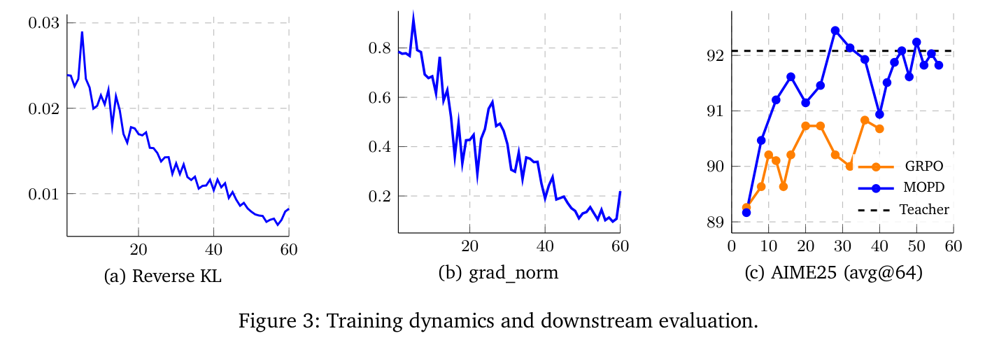
（续上页）\(\pi _{inf}(\cdot | x)\)。随后为该训练样本选择领域教师 \(\pi _{domain_{i}}\)，其中 \(domain_{i}\) 表示所选教师对应的能力领域。将步骤 \(t\) 的 decoding 状态写作 \(s_{t} = (x, y_{<t})\)，我们使用反向 KL 定义 token 级蒸馏优势：
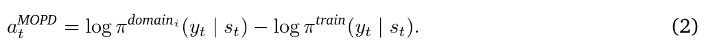
直观而言，当领域教师给予采样 token 的概率高于当前训练策略时，该项为正，因此充当稠密的 token 级蒸馏优势，并在训练过程中收敛至 0。对数概率差仅针对学生采样的 token 计算，而非针对整个词表。
由于响应在 \(\pi _{inf}\) 下采样，却在 \(\pi _{train}\) 下优化，我们使用截断重要性加权来处理训练与推理不匹配：
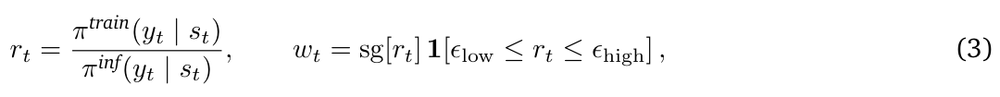
其中 sg[·] 表示停止 gradient。随后我们优化以下替代目标：
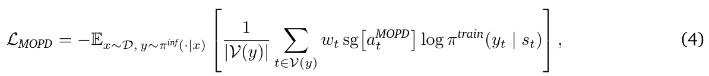
其中 \(\mathcal{V} (y)\) 是 token 掩码保留的有效响应 token 集合。
超参数。除非另有说明，我们采用 4 的 rollout 数量和每次更新 128 个提示，有效 batch 大小为 512 条响应。在后续实验中，我们发现使用 512 个提示、rollout 数量为 1 会带来稍稳定的优化，同时最终结果相似。我们使用 \(2 \times 10^{-6}\) 的学习率，并在前 30 个优化步进行线性 warmup，从 \(2 \times 10^{-7}\) 开始。训练通常在 40–50 个优化步内收敛（图 3(a)）。我们发现 warmup 阶段对稳定性很重要：训练开始时 gradient 范数显著较大，warmup 阶段后迅速降低（图 3(b)）。对于截断重要性加权，设 \(\epsilon _{low} = 0.5\)、\(\epsilon _{high} = 2.0\)。主要实验中，我们使用三个领域教师，分别对应数学、RLHF 和多领域。数学教师是初始 SFT checkpoint，它因精心整理的 SFT 数据集而已具有强大的数学推理能力。RLHF 教师是从初始 SFT checkpoint 出发，通过 RLHF 优化的 checkpoint。多领域教师则从先前 IF-RL + 多领域 RL 阶段之后的 checkpoint 中选择。我们相应地从 RL 训练数据池（RLHF、IF-RL 和多领域）以及用于数学的 AceReason-Math（Chen et al., 2025）中采样提示。
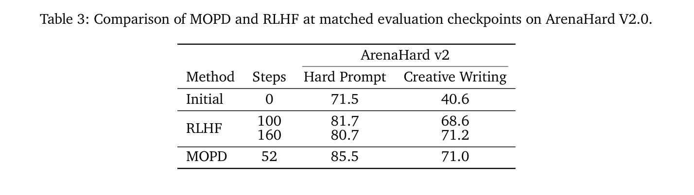
训练效率优势。MOPD 提供稠密的 token 级蒸馏优势，而 GRPO 依赖所有生成 token 共享的稀疏序列级结果奖励。这使 MOPD 实际上在样本与步数方面都高效得多。从相同的初始 checkpoint 出发，MOPD 始终用更少优化步达到更强性能。在 AIME25（图 3(c)）上，仅训练数学时，GRPO 经过 25 步从 89.9 提升至 91.0，而 MOPD 在 30 步内达到 92.0，恢复至教师水平。在 ArenaHard v2（表 3）上也出现类似趋势。经过 52 步，MOPD 将 Hard Prompt 从 71.5 提升至 85.5，将 Creative Writing 从 40.6 提升至 71.0。相比之下，RLHF 训练需要 160 步才能在 Hard Prompt 上达到 80.7、在 Creative Writing 上达到 71.2。这些结果表明，OPD 中的稠密 token 级优势能够带来快得多的训练收敛。
在 MOPD 的基础上，我们的 RLHF 方案侧重于人类偏好学习。该过程进一步提升创意写作以及代码和数学中的不可验证问题解决能力，由 ArenaHard v2（Li et al., 2024）衡量，同时保持其他领域的性能而不发生下降。
我们采用 NVIDIA Nano-v3（Blakeman et al., 2025）的 RLHF 训练数据集，包括 HelpSteer3（Wang et al., 2025）、arena-human-preference-140k 数据集的商用友好子集（Chiang et al., 2024），以及合成安全混合数据（Blakeman et al., 2025）。遵循 NVIDIA Nano-v3（Blakeman et al., 2025），我们使用 Qwen3-235B-A22B-Thinking-2507（Yang et al., 2025）作为 GenRM，通过 HelpSteer3 框架（Wang et al., 2025）训练。给定对话历史、用户请求与两个候选响应，GenRM 先推理每个响应的优缺点，再给出各自的有用性分数和最终比较排序。
沿用与 NVIDIA Nano-v3（Blakeman et al., 2025）相似的方案，我们使用 GenRM 进行 RLHF。为了确保训练信号具有高质量，我们对每个提示的所有 rollout 对进行成对比较。我们使用与 NVIDIA Nano-v3 RLHF 训练相同的方式聚合奖励分数，并应用相同的长度归一化奖励调整和以质量为门控条件的简洁性奖励（Blakeman et al., 2025）。这些机制鼓励在不牺牲质量的前提下给出更短响应，有效缓解推理 token 使用量的快速增长。
与 Nemotron Cascade（Wang et al., 2025）不同，我们只在思考模式下训练 RLHF。尽管同时纳入思考与非思考模式能够改善训练收敛，并在评估基准上带来小幅提升，我们却观察到指令遵循性能显著下降。下降程度足够大，以致早期 RLVR 阶段获得的提升无法完全恢复。
我们使用 128 的 batch 大小，每个提示生成 16 条 rollout，temperature 为 1.0，top-p 为 1.0。RLHF 的最大响应长度为 16K，不应用超长过滤。使用 AdamW（Kingma, 2014），学习率为 3e-6。熵损失系数设为 0，KL 损失系数设为 0.03，以保持其他领域的模型能力。训练约进行 30 步。
在 RLHF 之后，我们进行一个长上下文 RL 阶段，进一步提升模型的长上下文理解与推理能力。我们使用 NVIDIA Nano-v3 RL 数据混合（Blakeman et al., 2025），但将这一阶段限制为仅使用长上下文数据集。实验中，在长上下文 RL 中纳入其他领域会负面影响无关基准的性能，这促使我们采用这一领域专用训练设置。
我们采用 Nemo-Gym RL 环境（NVIDIA, 2025），并使用 Qwen3-235B-A22B-Instruct-2507 作为 LLM 裁判，评估问答任务上的模型 rollout。训练中输入序列限制为 32K token，最大序列长度设为 49K token，不应用超长过滤。
我们使用 128 的 batch 大小，每个提示生成 16 条 rollout，temperature 为 1.0，top-p 为 1.0。使用 AdamW（Kingma, 2014）进行优化，学习率为 \(3 \times 10^{-6}\)，熵损失和 KL 损失系数均设为零。训练约运行 30 步，因为我们观察到此后生成 token 数量会快速增加。
我们从 Nemotron-Cascade 编程语料库（Wang et al., 2025）构建代码 RL 训练集，其编程提示来自 AtCoder、Codeforces 和 AIZU 等现代竞赛编程平台，并具有用于奖励验证的稳健测试用例。为了提升训练效率并增强深度推理，我们大幅过滤 GPT-OSS-120B 在 8 次 rollout 中全部正确解决的提示，最终得到仅含 3.5K 个样本的紧凑数据集。我们发现，高难度提示配合强测试用例，对于进一步提升模型性能至关重要。
我们使用 128 的 batch 大小和 AdamW 优化器进行代码 RL，学习率为 \(3 \times 10^{-6}\)。与 Nemotron-Cascade 相比，我们将 RL 中的最大响应长度增至 118K token，将每个样本的 rollout 数量增至 16，使策略更好地捕获需要长推理轨迹的极难问题中的稀疏奖励信号。我们采用严格的二元奖励函数，以避免潜在的 reward hacking，并保持整个训练完全 on-policy，以确保稳定性。为支持每个 RL 步 \(128 \times 16 = 2,048\) 次代码执行所需的验证吞吐量，我们部署异步奖励验证服务器，在 384 个 CPU 核心上以 427.2 秒完成每个 batch。
训练详情与超参数。为了提升模型的代码修复能力，我们采用与 Wang et al.（2025）相同的数据来源，进行无 agent 代码修复强化学习（RL）训练。由于大多数实例不提供可执行的 Docker 环境，我们使用 GPTOOS-120B 作为 RM，评估模型生成代码修复的质量。遵循 Wang et al.（2025），我们对每个实例分别使用真实定位和检索排名前 5 的定位构建提示，并过滤相对简单的样本。我们以 \(128 \times 16 = 2,048\) 的 batch 大小（128 个提示，每个提示 16 条 rollout）、98,304 的最大序列长度，以及 \(3 \times 10^{-6}\) 的学习率，使用 AdamW 优化器进行无 agent SWE RL。我们采样响应时
（接下页。原文此处模型名写作 GPTOOS-120B，照原文保留。）
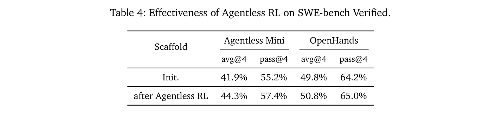
（续上页）使用 temperature 1.0 和 top-p 1.0。训练中，对于所有 rollout 均未获得高于 0.5 奖励的提示，我们屏蔽其损失。我们观察到，这些困难提示降低了无 agent SWE RL 训练的稳定性与有效性。无 agent RL 训练通常在 40–50 步内收敛。
无 agent RL 训练能否帮助 agent 任务？表 4 显示，无 agent RL 训练不仅改善无 agent 框架中的模型表现，也提升模型在 agent 场景中解决 SWE 任务的能力。注意，在 Agentless Mini 评估中，我们使用代码 embedding 模型 NV-Embed-Code（Sohrabizadeh et al., 2025），检索代码内容与问题上下文语义相似的 5 个候选文件。该结果表明，单独提升模型代码修复能力即可跨不同框架泛化，与 Yang et al.（2026）的观察一致。
现代软件工程 agent 依赖能够协调仓库交互、工具调用、代码编辑和测试执行的框架。训练 agent 在这些环境中有效运行，需要优化的不只是单个模型输出，而是整个问题解决轨迹。为此，我们直接在 agent SWE 框架内应用 RLVR，实现完整 agent 工作流的端到端优化。训练环境整合了成熟的 OpenHands 框架（Wang et al., 2025），提供结构化工具使用、仓库交互和迭代补丁生成。
我们在完全可执行的软件环境中使用基于执行的强化学习训练 agent，每个回合对应于解决 SWE-bench 等基准中的一个软件问题实例。Agent 在经过工具配置的仓库内运行，其中提供文件检查、搜索、代码编辑和测试执行工具。Agent 生成的候选补丁在环境内执行，环境根据编译结果与单元测试结果返回可验证信号，使奖励能够自动计算而无需人工标注。通过 OpenHands 框架，agent 迭代定位缺陷、提出补丁，并通过执行测试验证它们。环境反馈——包括编译错误、测试失败或测试通过——提供直接反映功能正确性的确定性奖励。
具体而言，我们以 1024 的 batch 大小进行基于执行的 agent 强化学习，对应 16 个提示、每个提示 64 条 rollout。最大上下文长度设为 256k token，允许 agent 最多进行 200 轮交互，在 agent 编程问题求解中提供更大的推理 token 预算。训练数据来自 SWE-Gym（Pan* et al., 2025）和 R2E-Subset（Jain et al., 2025）。我们使用中间模型为每个实例生成 16 条 rollout，并通过验证流水线评估它们。若某个实例的所有 rollout 均通过验证（100% 准确率），表明问题过于简单，则从数据集中删除。对于没有任何 rollout 通过验证的实例（0% 准确率），这表明问题极难，我们随机丢弃其中 90%，以降低它们在训练数据中的比例。
表 2 中，我们使用自我改进的 test-time scaling 框架（Shao et al., 2025），在 IMO 2025 题集上评估 Nemotron-Cascade-2-30B-A3B；模型迭代生成候选解答、验证解答，并根据自身反馈进行精炼。令人瞩目的是，尽管规模相对适中的 30B-A3B，模型成功解决前五道题。我们在附录 E 提供模型的完整解答及人类专家评论。这些结果尤其令人鼓舞，因为它们表明，相对紧凑的模型在配合有效的推理时扩展后，也能涌现出强大的奥林匹克级数学推理能力。仍有几个有前景的改进方向：专家审查表明，一些证明比必要长度更长，包含多余的中间步骤或定义，偶尔暴露中间推理痕迹，并且有时存在轻微排印问题。对于第 2 题，模型采用类似 OpenAI 方法的解析解法，而非类似 Gemini Deep Think（IMO Gold）所用的更偏几何的方法。
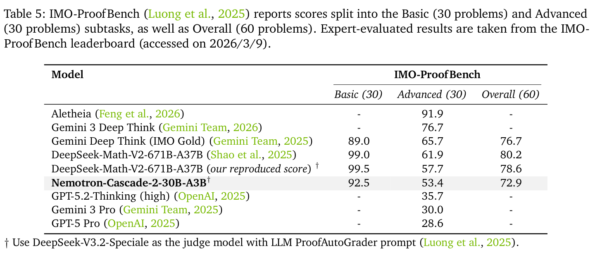
如表 5 所示，Nemotron-Cascade-2-30B-A3B 在 IMO-ProofBench 上通过生成—验证—精炼的 test-time scaling 达到 72.9 分，尽管激活参数少 10 倍，与 DeepSeek-Math-V2-671B-A37B 的差距仍不足 8 分。它在 Basic 子集上达到 90 分以上，并比 QED-Nano-4B（54.0）（LM-Provers et al., 2026）高出 18 分，不过由于裁判模型不同，后者不能直接比较。在我们的 LLM 裁判设置下重新评估所提供的 DeepSeek-Math-V2 证明，得到的分数与报告的人类评分相差不足 4 分，表明我们的协议并未大幅高估性能（更多细节见附录 A.1.2）。图 4 显示，增加测试时计算量能够提升 Nemotron-Cascade-2-30B-A3B 在 IMO-ProofBench（Advanced）上的表现，从第 1 轮的 40.7 提升至第 5 轮的 53.4，并缩小与使用同一评分器的 DeepSeek-Math-V2 之间的差距。
对于 IOI 2025，我们改编 Nemotron-Cascade（Wang et al., 2025）的 IOI test-time scaling 流水线，它可以看作一种多轮生成—选择—提交框架，在 IOI 官方规则下发挥模型推理能力。每个子任务最多分配 50 轮。每轮中，我们提示模型生成 40 个候选解答，并结合：（1）先前轮次的提交历史与官方评测判定；（2）同一
（接下页。）
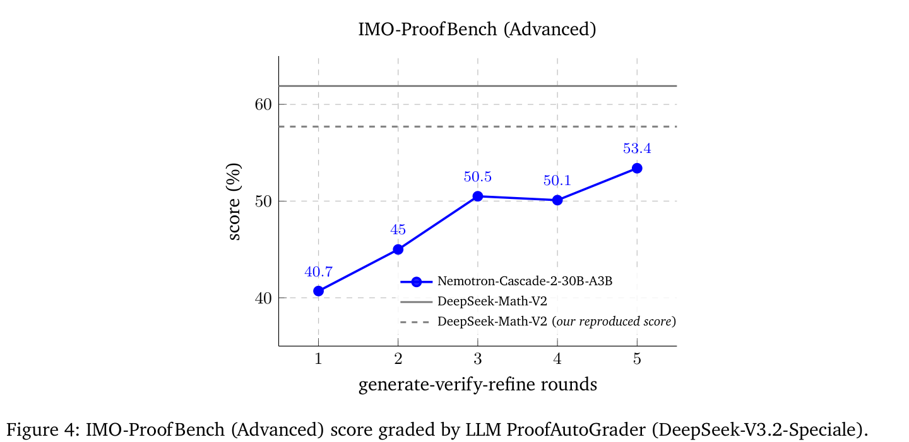
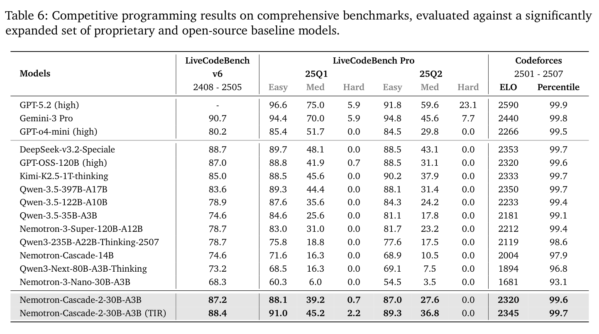
（续上页）主任务中高分或完全解决子任务的共享见解。完整聊天模板见附录 C.1。通过该方法，我们在第 3、4 题取得满分，在最多 \(40 \times 50 = 2000\) 次模型生成内获得金牌分数 439.28，而在 5000 次生成内能够达到 507.66。值得注意的是，在需要设计并优化启发式算法的第 2 题上，流水线仅用 5 轮（最多 200 次模型生成）就达到 86 分以上，证明了自我精炼和跨子任务见解的有效性。
对于 ICPC 世界总决赛 2025，我们为每题生成最多 1000 个解答，初步过滤后提交官方评估。我们成功解决 12 题中的 10 题，达到第 4 名金牌名次，其中 8 题（除 A、I 题外）仅用 100 次提交即解决。
我们在多种竞赛编程基准上评估 Nemotron-Cascade-2-30B-A3B，包括 LiveCodeBench v6（Jain et al., 2024）以及 LiveCodeBench Pro（Zheng et al., 2025）的 25Q1 和 25Q2 子集。我们还通过模拟参加 2501 至 2507 期间举办的 40 场 Div.1/Div.2 Codeforces 比赛，估计 Codeforces ELO 等级分。我们报告 128K token 思考预算、采样 temperature 1.0、top_p 0.95 下的 avg@8 结果。对于 tool-integrated reasoning（TIR）结果，我们允许模型调用有状态 Python 执行器，最多 100 次。评估基线模型时，我们遵循其推荐推理配置，确保思考预算至少为 128K token、最多为 256K token。更多评估细节见附录 A 和附录 D。
如表 6 所示，即使与总参数超过 100B 的前沿开源模型（例如 Nemotron-3-Super-120B-A12B、GPT-OSS-120B 和 Qwen-3.5-122B-A10B）相比，Nemotron-Cascade-2-30B-A3B 仍取得出色的 Pass@1 准确率和 ELO 等级分。借助 tool-integrated reasoning（TIR），模型性能能够进一步提升，尤其是在难题上，并与总参数超过 300B 的最强开源模型匹敌，例如 Kimi-K2.5-1T-Thinking、Qwen-3.5-397B-A17B 和 DeepSeek-v3.2-Speciale；这些模型要么缺乏用于深度推理的 TIR 支持，要么在 Python TIR 下表现不佳。值得注意的是，Nemotron-Cascade-2-30B-A3B 在 8 次尝试内，能够在 LiveCodeBench Pro 困难子集上达到高于 0% 的成绩，展现出对人类而言也极难的问题上的强大推理能力。
我们感谢 NVIDIA Nemo 团队在构建推理模型方面的宝贵讨论与合作。我们特别感谢 Boris Ginsburg、Oleksii Kuchaiev、Igor Gitman、Olivier Delalleau、Zhilin Wang、Olivier Delalleau、Tugrul Konuk、Wei Du、Somshubra Majumdar、Wasi Uddin Ahmad、Siddhartha Jain、Jiaqi Zeng、Yi Dong、Alexander Bukharin、Vahid Noroozi、Khushi Bhardwaj、Sugam Dipak Devare、Jian Zhang 和 Jonathan Cohen。
我们感谢 Ying Lin 在构建知识密集型 SFT 数据集时提供的有益讨论和有用意见。我们也感谢 Atefeh Sohrabizadeh、Jialin Song 和 Jonathan Raiman 关于 SWE-bench 的宝贵讨论。
对于非证明数学推理任务，我们纳入：
在 AIME 2025、AIME 2026 和 HMMT 2025 Feb 上评估 Nemotron-Cascade-2-30B-A3 时，我们将思考预算（最大响应长度）设为 131K token，采样 temperature 为 1.0，top-p 为 1.0。对于使用工具的设置，我们通过附加系统提示后缀启用工具使用，允许模型最多调用 100 次有状态 Python 执行器，最大响应长度为 131K token。对于 IMO-AnswerBench，我们设为 256K token，因为发现题目显著更难。由于短答案较为复杂，基于规则的验证器难以计算，我们在 IMO-AnswerBench 上使用 GPT-OSS-120B（Agarwal et al., 2025）作为裁判，采用 AnswerAutoGrader 提示（Luong et al., 2025）判断答案正确性，并使用和报告 LLM 裁判分数。遵循 Liu et al.（2024, 2026），我们在 AIME/HMMT 上报告 avg@64，在 IMO-AnswerBench 上报告 avg@16。
对于基线模型，我们使用其报告中的官方数值；若没有官方数值，则采用推荐设置评估。
对于数学证明任务，我们纳入：
对于 Nemotron-Cascade-2-30B-A3，我们遵循 DeepSeek-Math-V2 的生成—验证—精炼流水线，使用相同指令应用 test-time scaling。我们通过 NeMo-Skills（NVIDIA, 2025）实现该流水线。使用 DeepSeek-Math-V2 的默认超参数：生成 128 个证明，每个证明进行 64 次验证，选择排名前 32 个证明进行精炼，并为每个证明配对 8 个验证分析，优先选择评分最低的分析。随后生成 4 个精炼证明，最多继续 8 轮，或直至平均证明分数达到 0.99999 阈值。最大生成长度设为 256K token，temperature 为 1.0，top-p 为 0.95。
对于 IMO-ProofBench Basic 和 Advanced 子集中的 11 道题（即第 1、4、7、13、14、17、19、22、25、26 和 28 题），为节省计算，我们将预算降低为生成 32 个证明、16 次验证、排名前 8 个证明和 2 轮。IMO-ProofBench 评估使用 DeepSeek-V3.2-Speciale，以确保结果日后可以复现，并以 ProofAutoGrader 提示（Luong et al., 2025）进行 64 次评分尝试。我们发现，报告平均分时，DeepSeek-Math-V2 在 Advanced
（接下页。）
（续上页）子集上得到 73.8，显著高于人类评分 61.9。因此，我们根据分析采用一条简单聚合规则：如果任何裁判给出 0 分，最终分数设为 0；否则返回平均分。在该规则下，DeepSeek-Math-V2 得到 57.7，更接近人类评分，将差距从 11.9 分缩小至 4.2 分。
对于代码生成任务，我们纳入：
在 LiveCodeBench v6 和 LiveCodeBench Pro 上评估 Nemotron-Cascade-2-30B-A3B 时，我们使用 128K token 思考预算，采样 temperature 为 1.0，top-p 为 0.95。对于使用工具的设置，我们通过附加系统提示后缀启用工具，允许模型调用有状态 Python 执行器最多 100 次，最大响应长度为 131K token。我们按照基线模型的推荐推理配置评估它们，确保思考预算至少为 128K token。
对于知识推理任务，我们纳入：
在思考模式下于 MMLU-Redux、MMLU-Pro、GPQA-Diamond 和 HLE 上评估 Nemotron-Cascade-2-30B-A3B 时，我们使用 temperature 1.0、top-p 0.95 和 128K token 思考预算（最大响应长度）。对于 HLE，我们使用默认系统提示，在每个问题后添加“请将最终答案放在
（接下页。）
（续上页）\boxed{} 内”，并使用 GPT-OSS-120B 作为 LLM 裁判，依据附录 C.2 的提示进行答案提取与正确性验证。相比要求解释、答案和置信度分数的 HLE 官方响应格式，这一方框答案提示通过更好地对齐数学 SFT 数据中的答案格式，将准确率提升 6–7 分，主要体现在数学子集。
对于对齐任务，我们纳入：
在非思考模式下于 IFEval、思考模式下于 IFBench 和 ArenaHard 上评估 Nemotron-Cascade 模型时，我们使用 temperature 0.6、top-p 0.95，最大响应长度为 32K token。对于基线模型，只要有官方报告结果就使用；没有时则使用其推荐推理配置，或与我们相同的设置评估。
对于长上下文与上下文学习任务，我们纳入：
（接下页。）
（续上页）embedding 长干扰文本（“干草堆”）中的某条特定信息（“针”）。RULER 基准定义了此任务的四种变体：Single NIAH、Multi-keys NIAH、Multi-values NIAH 和 Multi-queries NIAH。遵循 Blakeman et al.（2025），我们在 1M token 上下文设置下评估每类 100 个实例。在关闭推理的模式下评估模型，并报告单次生成的 pass@1 准确率（avg@1）。
对于 agent 任务，我们纳入：
对于 SWE-bench Verified，我们使用 OpenHands 框架（Wang et al., 2025）作为 agent 编程评估框架。我们对 agent 轨迹采用完整交互保留策略，保留各轮工具调用、观察和模型输出的完整历史。其中包括此前的文件查看、搜索结果、已执行命令和中间补丁，使模型能够在长周期调试过程中维持状态并有效推理。最大上下文长度设为 256K token，允许最多 200 轮，与基于执行的 agent SWE-RL 训练配置一致。值得注意的是，该评估设置与训练环境非常接近，因为两者均依赖相同工具增强框架内的基于执行的反馈与多轮交互。这种对齐减少了训练—测试不匹配，使模型能够更有效地将迭代调试、假设精炼和工具驱动推理等已学行为迁移至评估场景。
对于 τ2-Bench 评估，我们采用最新轮次思考保留策略，管理多轮交互中的推理轨迹：保留最新用户轮次之后的模型推理内容，丢弃更早轮次的推理内容。τ2-Bench 官方评估代码遵循不延续思考的策略，删除全部先前推理内容；实验中，该评估设置相较最新轮次思考保留持续降低 3–5 分。我们将这一差距归因于训练—测试不匹配，
（接下页。）
（续上页）因为 τ2 风格交互的 SFT 数据采用相同的最新轮次思考保留策略构建，这也是 Nemotron-3-Nano-v3 和 DeepSeek-V3.2 所用的思考状态管理策略。对于 telecom 子集，我们还修改系统提示，将“确保引导用户完成各步骤，不要自行执行用户侧操作”这一指令重复三次，以强调双控制设置。我们也测试了完整思考保留策略，它保留所有先前轮次的推理内容，更接近 RL 训练，但发现其准确率与最新轮次思考保留相似，却带来明显更长的上下文。因此，我们使用最新轮次思考保留报告最终 τ2-Bench 结果。
对于多语言任务，我们纳入：
表 7、9、10 列出了 Nemotron-Cascade-2-30B-A3B 在所有阶段的训练超参数。
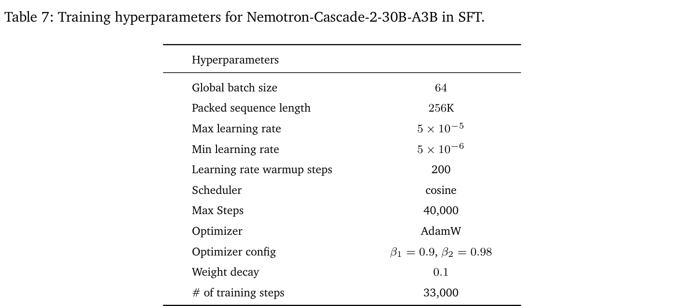
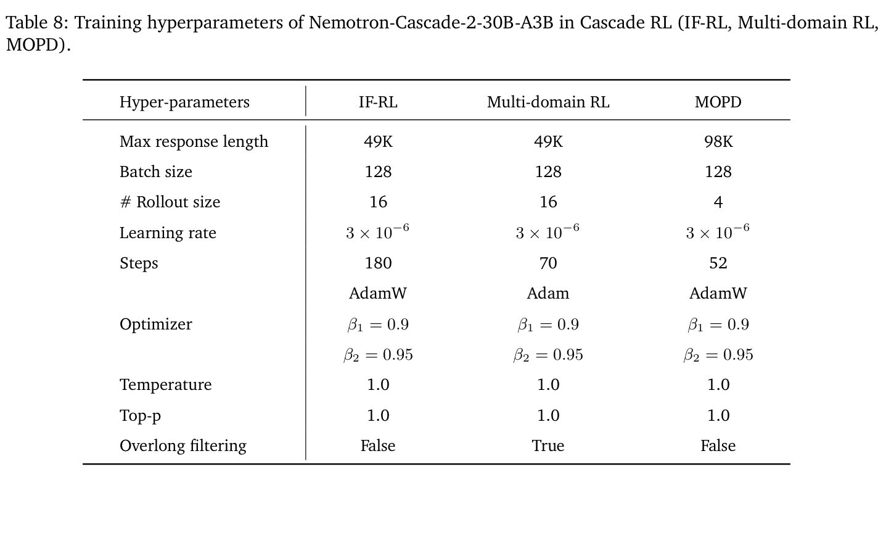
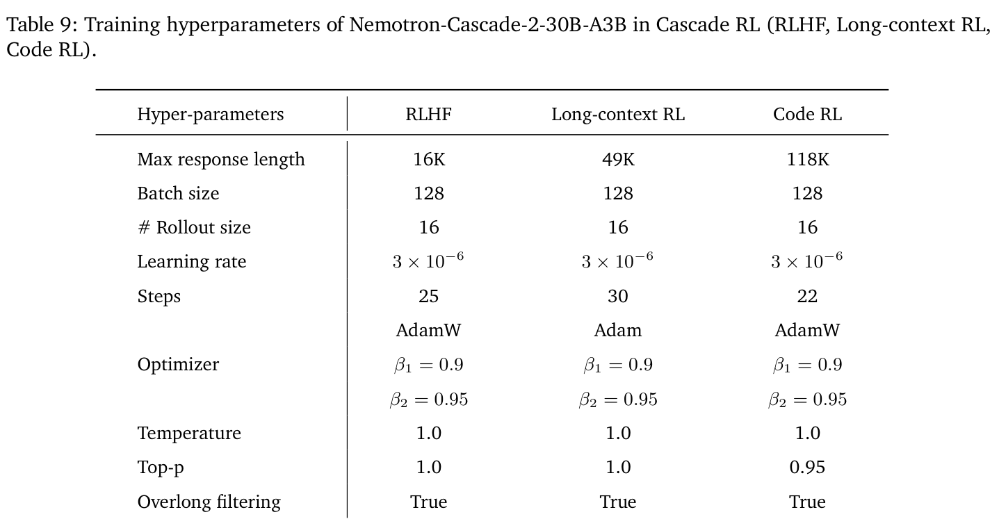
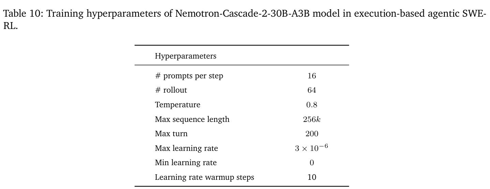
编写 Python 代码解决该问题。请将解答代码放入以下格式：
```python
# 在此填写你的解答代码
```
{problem_statement}
下方提供已经被接受的正确解答，但输入约束不同。你可以将它们作为获取思路的参考。
=======================
## 不同约束（仅供参考）：
{subtask_constraints}
### 已接受代码：
[CODE]
=======================
## 不同约束（仅供参考）：
...
=======================
从这里开始，还会提供你的提交历史，其中包含**错误**代码及其对应的官方评测判定，作为参考——官方评测判定及题目陈述/条件是 100% 可靠的。如果它们有帮助，你应据此改进：
=======================
### 错误代码
[CODE]
评测判定：[VERDICT]，分数：[SCORE]
=======================
### 错误代码
...
=======================
根据下方准确、无歧义的 [correct_answer]，判断以下针对 [question] 的 [response] 是否正确。
[question]: {question}
[response]: {response}
你的判断必须采用以下指定格式和标准：
extracted_final_answer: 从 [response] 中提取的最终准确答案。如果响应中没有可提取的准确最终答案，将提取答案写为 'None'。
[correct_answer]: {correct_answer}
reasoning: 根据 [correct_answer] 解释 extracted_final_answer 为什么正确或错误，只关注 [correct_answer] 与 extracted_final_answer 之间是否存在有意义的差异。不要评论题目的任何背景，不要尝试解题，不要为任何不同于 [correct_answer] 的答案辩护，只关注答案是否匹配。
correct: 如果 extracted_final_answer 与上述 [correct_answer] 匹配，或对于数值问题处于很小的误差范围内，回答 'yes'。否则回答 'no'，即存在任何不一致、歧义、不等价，或提取的答案错误。
confidence: 从 [response] 提取的、介于 0% 与 100% 之间的置信度分数。如果没有可用的置信度分数，写为 100。我们基于 2501–2507 期间最近举行的 40 场 Div.1 和 Div.2 Codeforces 比赛，对 Nemotron-Cascade-2-30B-A3B 模型进行 ELO 等级分分析。题目与评估由 LiveCodeBench Pro（Zheng et al., 2025）提供。我们采用类似 Wang et al.（2025）的等级分估计方法，允许模型对每道赛题提交最多 \(N = 8\) 次，并在考虑预期罚时的情况下，估计模型表现与相对于人类选手的名次。模型响应使用 temperature 1.0、top-p 0.95 和 128K 的最大 token 预算生成。Nemotron-Cascade-2-30B-A3B 模型使用与不使用 python 工具的详细表现，分别见表 11 和表 12。
我们观察到模型能够解决真正困难的问题，展现出强大的代码推理能力，甚至在部分 Div.1 比赛（Round 999、1012、1015、1021 等）中取得很高名次，同时在简单至中等难度问题上保持稳定表现。然而，模型在应对需要构造算法、交互方式和假设驱动思路的问题时仍存在不足。
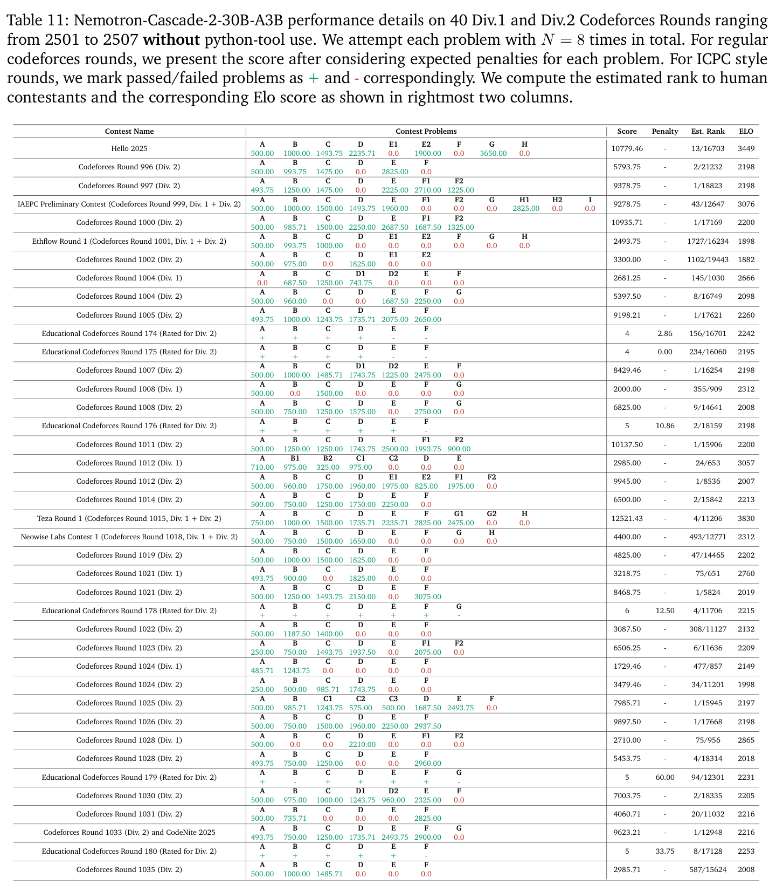
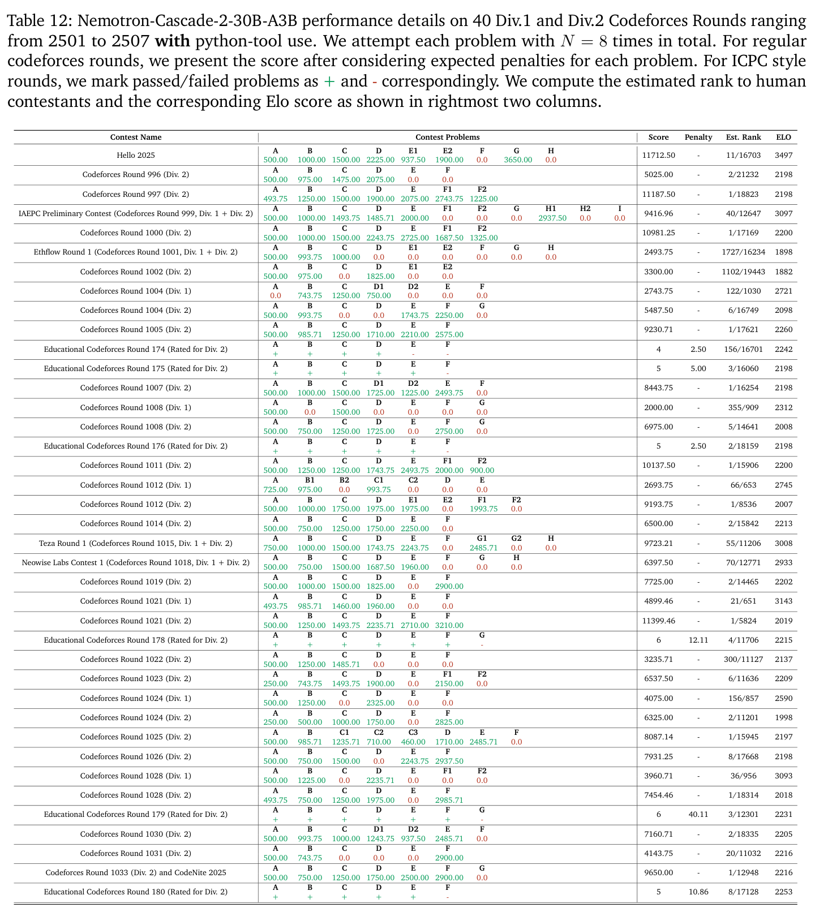
若平面中的直线与 \(x\) 轴、\(y\) 轴以及直线 \(x + y = 0\) 都不平行，则称其为 sunny 直线。
给定整数 \(n \ge 3\)。求所有非负整数 \(k\)，使平面中存在 \(n\) 条不同直线，同时满足：
简短答案：对所有 \(n\)，\(k = 0\)、1、3。
记号。对整数 \(n \ge 3\)，定义
Sn = {(a,b) ∈ ℤ² | a ≥ 1，b ≥ 1，a + b ≤ n + 1}。
平面中的直线若斜率既不是 0（水平）、∞（垂直），也不是 −1（直线 \(x + y = 0\) 的斜率），则称为 sunny 直线。
我们要确定所有非负整数 \(k\)，使存在 \(n\) 条不同直线覆盖 \(S_{n}\) 的全部点，并且其中恰有 \(k\) 条是 sunny 直线。
\(k = 0\)。取 \(n\) 条垂直直线 \(x = 1\)、\(x = 2\)、…、\(x = n\)。每个点 \((a,b) \in S_{n}\) 都满足 \(a \le n\)，因此位于直线 \(x = a\) 上。这些直线都不是 sunny 直线。显然共有 \(n\) 条不同直线，因此对每个 \(n \ge 3\)，\(k = 0\) 都可实现。
\(k = 1\)。对于 \(n \ge 3\)，取 \(n - 1\) 条垂直直线 \(x = 1\)、…、\(x = n - 1\)，以及直线
\(L\)：通过 (n,1) 和 \((n - 2,2)\)。
\(L\) 的斜率为 \((2 - 1)/((n - 2) - n) = -1/2\)；既不是 0、∞、−1，因此 \(L\) 是 sunny 直线。
因此 \(S_{n}\) 的所有点均被覆盖。故 \(k = 1\) 对所有 \(n \ge 3\) 都可实现。
\(k = 3\)。情形 \(n = 3\)。\(S_{3}\) 包含六个点：
(1,1)、(1,2)、(1,3)、(2,1)、(2,2)、(3,1)。
取三条 sunny 直线：
ℓ1：y = x，
ℓ2：y = −2x + 5，
ℓ3：y = −(1/2)x + 5/2。
其斜率分别为 1、−2、−1/2，均不是 0、∞、−1，因此都是 sunny 直线。直接检查可知六个点都至少属于其中一条直线。因此 \(n = 3\) 时 \(k = 3\) 可实现。
情形 \(n \ge 4\)。
（接下页。）
（续上页）取 \(n - 3\) 条垂直直线 \(x = 1\)、\(x = 2\)、…、\(x = n - 3\)。\(S_{n}\) 中剩余点满足 \(a \ge n - 2\)：
W = {(n − 2,1)、(n − 2,2)、(n − 2,3)、(n − 1,1)、(n − 1,2)、(n,1)}。
用以下三条 sunny 直线覆盖 \(W\)：
\(L_{a}\)：通过 \((n - 2,1)\) 和 \((n - 1,2)\)（斜率 1）；
\(L_{b}\)：通过 \((n - 2,2)\) 和 (n,1)（斜率 −1/2）；
\(L_{c}\)：通过 \((n - 2,3)\) 和 \((n - 1,1)\)（斜率 −2）。
所有斜率均不同于 0、∞、−1，因此这些直线都是 sunny 直线。加上 \(n - 3\) 条垂直直线后，恰有 \(n\) 条不同直线。每个满足 \(a \le n - 3\) 的点都位于某条垂直直线上；\(W\) 的六个点位于 \(L_{a}\)、\(L_{b}\)、\(L_{c}\) 上。因此整个 \(S_{n}\) 都被覆盖。故 \(k = 3\) 对所有 \(n \ge 3\) 都可实现。
我们对 \(n\) 使用归纳法，证明 \(S_{n}\) 的任何 \(n\) 条直线覆盖都必须满足 \(k \in \{0,1,3\}\)。
定义三条特殊直线：
S1：x = 1，S2：y = 1，S3：x + y = n + 1。
它们是包含 \(S_{n}\) 的直角三角形的三条边。令 \(X\) 为位于这三条边上的 \(S_{n}\) 点集，即
X = {(1,b) | 1 ≤ b ≤ n} ∪ {(a,1) | 1 ≤ a ≤ n} ∪ {(a,b) | a + b = n + 1}。A1
共有 \(|X| = 3n - 3\) 个不同的点（三个顶点被计算了两次）。A2
引理。不属于 \(S_{1}\)、\(S_{2}\)、\(S_{3}\) 的直线最多包含 \(X\) 的两个点。
证明。若这样的直线包含同一条边上的两个不同点，它便与该边重合，与假设矛盾。因此每条边上它最多包含一个点。A3此外，直线最多与三角形边界相交于两点（除非与某条边重合）。所以它最多包含 \(X\) 的两个点。□
考虑 \(S_{n}\) 的任意 \(n\) 条直线覆盖，令 \(k\) 为 sunny 直线数。A4对每条直线 \(\ell\)，以 \(f(\ell )\) 表示 \(X\) 中位于 \(\ell\) 上的点数。由于 \(X\) 的每个点至少被覆盖一次，
∑ℓ f(ℓ) ≥ |X| = 3n − 3。 (1)
若某条直线是特殊边 \(S_{1}\)、\(S_{2}\)、\(S_{3}\) 之一，则它包含该边的全部 \(n\) 个点，因此 \(f(\ell ) = n\)。若不是特殊边（无论是否 sunny），引理给出 \(f(\ell ) \le 2\)。令 \(s\) 为在这 \(n\) 条直线中实际出现的特殊边数量，则
∑ℓ f(ℓ) ≤ s·n + (n − s)·2 = 2n + s(n − 2)。 (2)
结合 (1) 和 (2)，得到
\(3n - 3 \le 2n + s(n - 2) \Rightarrow n - 3 \le s(n - 2)\)。 (3)
对于 \(n \ge 4\)，有 \(n - 2 > 0\)A5，因此 (3) 强制 \(s \ge 1\)。所以 \(n \ge 4\) 时，\(S_{n}\) 的任何 \(n\) 条直线覆盖，必须包含边 \(x = 1\)、\(y = 1\) 或 \(x + y = n + 1\) 中至少一条。
A1：与 \(S_{n}\) 的定义类似，我们需要要求 \(a\)、\(b\) 为整数。
A2：“计算了两次”是什么意思？有两种写法：1. 每条边有 \(n\) 个点，因此三条边总共 3n 个点，但三个顶点被计算两次，所以不同点数为 \(3n - 3\)。2. 直接说有 \(3n - 3\) 个不同点，而不提“计算两次”，也可以。
A3：这句话与证明无关。
A4：这个定义没有必要，因为 2.2 中并未使用 \(k\)。
A5：\(n - 3 > 0\)。
假设 \(n \ge 4\)，存在用 \(n\) 条直线覆盖 \(S_{n}\)、其中 \(k\) 条为 sunny 直线的覆盖。根据上一段，至少出现一条特殊边；我们说明如何构造用 \(n - 1\) 条直线覆盖 \(S_{n-1}\)，并保持同样的 \(k\)。
情形 \(A\)：出现 \(x = 1\)。移除直线 \(x = 1\)。剩下 \(n - 1\) 条直线覆盖 \(S_{n}\) 中所有满足 \(a \ge 2\) 的点。令 \(S' = \{(a,b) \in S_{n} | a \ge 2\}\)，并定义平移 \(\varphi\)：\(S' \to S_{n-1}\)，\(\varphi (a,b) = (a - 1,b)\)。A6这是一个双射。将剩余 \(n - 1\) 条直线按 (−1,0) 平移：对每条直线 \(\ell\)（\(\ell \ne (x = 1)\)），设 \(\ell ' = \{(x - 1,y) | (x,y) \in \ell \}\)。平移保持斜率，因此 \(\ell '\) 为 sunny 当且仅当 \(\ell\) 为 sunny，且不同直线仍然不同。由于原直线覆盖 S′，其平移覆盖 \(\varphi (S') = S_{n-1}\)。因此得到用 \(n - 1\) 条直线覆盖 \(S_{n-1}\)、其中恰有 \(k\) 条 sunny 直线的覆盖。
情形 \(B\)：出现 \(y = 1\)。类似地，移除 \(y = 1\)，将剩余直线按 (0,−1) 平移，得到用 \(n - 1\) 条直线覆盖 \(S_{n-1}\)、其中有 \(k\) 条 sunny 直线的覆盖。
情形 \(C\)：出现 \(x + y = n + 1\)。移除该直线。集合 \(\{(a,b) \in S_{n} | a + b \le n\}\) 恰为 \(S_{n-1}\)。剩余 \(n - 1\) 条直线直接覆盖 \(S_{n-1}\)（它们覆盖整个 \(S_{n}\)，而移除的直线不包含 \(S_{n-1}\) 的任何点）。无需平移，sunny 直线数仍为 \(k\)。三种情形均得到用 \(n - 1\) 条直线覆盖 \(S_{n-1}\)、并具有同样 \(k\) 的覆盖。
基础情形 \(n = 3\)。我们已经给出 \(k = 0\)、1、3 的覆盖。剩下需要证明 \(k = 2\) 不可能。\(n = 3\) 时，集合 \(S_{3}\) 恰为边界 \(X\)。观察可知，唯一包含 \(S_{3}\) 两个点且为 sunny 的直线是：
\(\ell _{1}\)：通过 (1,1)、(2,2)（斜率 1）；
\(\ell _{2}\)：通过 (1,2)、(3,1)（斜率 −1/2）；
\(\ell _{3}\)：通过 (1,3)、(2,1)（斜率 −2）。
其他包含两个点的直线，斜率均为 0、∞ 或 −1，因此不是 sunny。假设用三条直线覆盖 \(S_{3}\)，恰有 \(k = 2\) 条 sunny 直线。则恰有一条非 sunny 直线 \(N\)。
若 \(N\) 是一条特殊边（例如 \(x = 1\)），则 \(N\) 覆盖三个点。剩下三个点必须由两条 sunny 直线覆盖。但通过这三个点中任意两个点的直线，要么垂直、要么水平、要么斜率 −1，均非 sunny。因此每条 sunny 直线最多包含这些点中的一个，两条最多覆盖两个点，矛盾。
若 \(N\) 不是特殊边，则 \(N\) 最多包含两个点。令 \(f(\ell )\) 为直线 \(\ell\) 上 \(S_{3}\) 点的数量。要覆盖全部六点，需 \(\sum f(\ell ) \ge 6\)。对非特殊的 sunny 直线，由引理 \(f(\ell ) \le 2\)。若任何直线满足 \(f(\ell ) \le 1\)，则总和最多为 1 + 2 + 2 = 5 < 6。因此每条直线必须满足 \(f(\ell ) = 2\)。特别地，两条 sunny 直线各恰好包含两个点，\(N\) 也恰好包含两个点。所以三条直线将 \(S_{3}\) 划分为三个互不相交的共线点对。
唯一可由 sunny 直线覆盖的共线点对是 \(\{\ell _{1}\}\)、\(\{\ell _{2}\}\)、\(\{\ell _{3}\}\)。因此两条 sunny 直线必须是 \(\{\ell _{1},\ell _{2},\ell _{3}\}\) 中的两条。未覆盖点对恰为剩余 \(\ell _{m}\) 的点对。\(N\) 若要覆盖该点对，必须是通过这两点的直线，即 sunny 直线 \(\ell _{m}\)，与 \(N\) 非 sunny 矛盾。因此 \(k = 2\) 不可能。所以 \(n = 3\) 时唯一可能的 \(k\) 为 0、1、3。
\(n \ge 4\) 的归纳步骤。假设命题对 \(n - 1\) 成立。对于任意用 \(n\) 条直线覆盖 \(S_{n}\)、其中 \(k\) 条为 sunny 的覆盖，我们已说明如何构造用 \(n - 1\) 条直线覆盖 \(S_{n-1}\)，并保持同样的 \(k\)。由归纳假设，\(k \in \{0,1,3\}\)。因此命题也对 \(n\) 成立。
由归纳法，对每个 \(n \ge 3\)，任何用 \(n\) 条直线覆盖 \(S_{n}\) 的覆盖，均必须满足 \(k \in \{0,1,3\}\)。结合 §1 的构造，我们得出使该配置存在的所有非负整数 \(k\) 的集合恰为
（接下页。）
人类专家边注 A6：应写为 \(\varphi ((a,b))\)，因为输入是点对 (a,b)，而不是两个参数 \(a\) 与 \(b\)。
（续上页）{0,1,3}。
7/7
设 \(\Omega\)、\(\Gamma\) 分别为以 \(M\)、\(N\) 为圆心的圆，\(\Omega\) 的半径小于 \(\Gamma\) 的半径。假设 \(\Omega\)、\(\Gamma\) 交于两个不同点 \(A\)、\(B\)。直线 MN 与 \(\Omega\) 交于 \(C\)、与 \(\Gamma\) 交于 \(D\)，且 \(C\)、\(M\)、\(N\)、\(D\) 按此顺序位于 MN 上。令 \(P\) 为三角形 ACD 的外心。直线 AP 再次与 \(\Omega\) 交于 \(E \ne A\)、与 \(\Gamma\) 交于 \(F \ne A\)。令 \(H\) 为三角形 PMN 的垂心。证明经过 \(H\) 且平行于 AP 的直线，与三角形 BEF 的外接圆相切。
简短答案：未提供简短答案。
建立坐标系，使 \(M = (0,0)\)、\(N = (d,0)\)，\(d > 0\)。
圆：\(\Omega\)：\(x^{2} + y^{2} = r^{2}\)（半径 \(r\)），\(\Gamma\)：\((x - d)^{2} + y^{2} = R^{2}\)（半径 \(R\)），\(0 < r < R\)。
两圆交于两个点；令 \(A = (x_{A},y_{A})\)，\(y_{A} > 0\)，\(B = (x_{A},-y_{A})\)。解圆方程得到
xA = (d² + r² − R²)/(2d)，yA² = ((R + r)² − d²)(d² − (R − r)²)/(4d²)。
定义 \(U = R + r\)，\(V = R - r\)，\(K = d^{2} - V^{2}\)，\(L = U^{2} - d^{2}\)。
则 \(4y_{A}^{2} = LK/d^{2}\)。（注意，两圆交于不同的两点，因此 \(d\) 满足 \(V < d < U\)。）直线 MN（\(x\) 轴）与 \(\Omega\) 交于 \(C = (-r,0)\)，与 \(\Gamma\) 交于 \(D = (d + R,0)\)。MN 上的顺序为 \(C\)、\(M\)、\(N\)、\(D\)。
由于 \(C\)、\(D\) 在 \(x\) 轴上，CD 的垂直平分线是垂直直线 \(x = h\)，其中
h = (−r + (d + R))/2 = (d + R − r)/2 = (d + V)/2。
因此某个 \(p\) 满足 \(P = (h,p)\)。由 \(PA = PC\) 得到
(h − xA)² + (p − yA)² = (h + r)² + p²。
解出 \(p\) 得 \(p = -KT/(4dy_{A})\)，其中 \(T = d + R + r = d + U\)。
向量 \(v = P - A\) 为 \(v = (v_{x},v_{y}) = (VT/(2d), -KUT/(4d^{2}y_{A}))\)。
直线 AP 由点 \(A + tv\) 构成。代入 \(\Omega\)（使用 \(A\cdot A = r^{2}\)）得到
2tA·v + t²|v|² = 0，
因此非零根为 \(t_{E} = -2A\cdot v/|v|^{2}\)。计算得 \(A\cdot v = -rT/2 \Rightarrow t_{E} = rT/|v|^{2}\)。
类似地，对 \(\Gamma\) 使用 \((A - N)\cdot v = -RT/2\)，得到
（接下页。）
（续上页）\(t_{F} = RT/|v|^{2}\)。
因此 \(E = A + t_{E}v\)，\(F = A + t_{F}v\)。EF 的中点 \(S\) 为 \(S = A + t_{S}v\)，其中
tS = (tE + tF)/2 = (r + R)T/(2|v|²) = UT/(2|v|²)。
令 \(e = v/|v|\)，\(n = (-v_{y},v_{x})/|v|\)。则 \(e\) 为 AP 的方向，\(n\) 垂直于 AP，EF 平行于 \(e\)。EF 的半长为
ℓ = |tF − tE| |v|/2 = VT/(2|v|)，ℓ² = V²T²/(4|v|²)。
因此 \(E = S - \ell e\)，\(F = S + \ell e\)。
点：\(M = (0,0)\)，\(N = (d,0)\)，\(P = (h,p)\)。从 \(P\) 出发的高为垂直直线 \(x = h\)。从 \(M\) 出发的高垂直于 PN；PN 的斜率为 \(-p/(d - h)\)，因此从 \(M\) 出发的高的方程为 \(y = ((d - h)/p)x\)。相交得到
H = (h,h(d − h)/p)。
现在 \(h(d - h) = (d + V)(d - V)/4 = (d^{2} - V^{2})/4 = K/4\)。使用 \(p = -KT/(4dy_{A})\)，得到
H = (h,(K/4)/(−KT/(4dyA))) = (h,−dyA/T)。
由于 \(S = A + t_{S}v\) 且 \(n\) ⊥ \(v\)，有
(S − B)·n = (A − B)·n，(S − H)·n = (A − H)·n。
因此 \(\beta = (A - B)\cdot n\)，\(\gamma = (A - H)\cdot n\)。
现在 \(A - B = (0,2y_{A})\)，\(n = (-v_{y},v_{x})/|v|\)，故
β = 2yAvx/|v| = (2yA/|v|)·(VT/(2d)) = yAVT/(d|v|)。
为计算 \(\gamma\)，使用 \(w\cdot n = -(w \times v)/|v|\)（适用于任何 \(w\)）。因此
γ = −((A − H) × v)/|v|。
我们计算叉积。坐标为：
xA − h = −VT/(2d)，yA − Hy = yA + dyA/T = yA(T + d)/T，
vx = VT/(2d)，vy = −KUT/(4d²yA)。
则
(A − H) × v = (xA − h)vy − (yA − Hy)vx = (−VT/(2d))(−KUT/(4d²yA)) − (yA(T + d)/T)(VT/(2d)) = VKUT²/(8d³yA) − VyA(T + d)/(2d)。
提出 V/(2d)：
(A − H) × v = (V/(2d))(KUT²/(4d²yA) − yA(T + d))。
令 \(B = KUT^{2}/(4d^{2}y_{A}) - y_{A}(T + d)\)。乘以 \(2y_{A}\)：
2yAB = KUT²/(2d²) − 2yA²(T + d)。
利用 \(4y_{A}^{2} = LK/d^{2}\)，有 \(y_{A}^{2} = LK/(4d^{2})\)，因此
2yA²(T + d) = LK(T + d)/(2d²)。
所以 \(2y_{A}B = (K/(2d^{2}))(UT^{2} - L(T + d))\)。
现在 \(T = d + U\)，\(L = U^{2} - d^{2}\)。计算得
UT² − L(T + d) = U(d + U)² − (U² − d²)(2d + U) = 2d²T。
因此 \(2y_{A}B = (K/(2d^{2}))\cdot 2d^{2}T = KT\)，故 \(B = KT/(2y_{A})\)。于是
(A − H) × v = (V/(2d))·(KT/(2yA)) = VKT/(4dyA)。
所以 \(\gamma = -VKT/(4dy_{A}|v|)\)。
与 \(\beta = y_{A}VT/(d|v|)\) 比较，得到 \(\gamma = -(K/(4y_{A}^{2}))\beta\)。
此外，利用 \(4y_{A}^{2} = LK/d^{2}\)，可以写作
K/(4yA²) = d²/L ⇒ γ = −(d²/L)β。
写作 \(A - B = \alpha e + \beta n\)，其中 \(\alpha = (A - B)\cdot e = ((A - B)\cdot v)/|v|\)。计算得
(A − B)·v = 2yAvy = 2yA(−KUT/(4d²yA)) = −KUT/(2d²)，
因此 \(\alpha = -KUT/(2d^{2}|v|)\)。
由于 \(S = A + t_{S}v\) 且 \(v = |v|e\)，
S − B = (A − B) + tSv = (αe + βn) + tS|v|e = (α + tS|v|)e + βn。
现在 \(t_{S}|v| = UT/(2|v|)\)。所以
α + tS|v| = −KUT/(2d²|v|) + UT/(2|v|) = (UT/(2|v|))(1 − K/d²) = (UT/(2|v|))·(V²/d²) = UV²T/(2d²|v|)。
因此
|S − B|² = (α + tS|v|)² + β² = U²V⁴T²/(4d⁴|v|²) + yA²V²T²/(d²|v|²)。
代入 \(y_{A}^{2} = LK/(4d^{2})\)，得到
|S − B|² = (V²T²/|v|²)(U²V²/(4d⁴) + LK/(4d⁴)) = (V²T²/(4d⁴|v|²))(U²V² + LK)。
EF 的垂直平分线是经过 \(S\) 且平行于 \(n\) 的直线，因此可写作 \(O = S + \lambda n\)，其中 \(\lambda\) 为某个实数。外接圆半径 \(\rho\) 满足 \(\rho ^{2} = |O - E|^{2} = \ell ^{2} + \lambda ^{2}\)。条件 \(|O - B|^{2} = \rho ^{2}\) 给出
|(S − B) + λn|² = ℓ² + λ²。
展开，并利用 \(S - B = \alpha 'e + \beta n\)，其中 \(\alpha ' = \alpha + t_{S}|v|\)（因而 \(|S - B|^{2} = \alpha '^{2} + \beta ^{2}\)），得到
α′² + (β + λ)² = ℓ² + λ² ⇒ |S − B|² + 2λβ = ℓ²。 (1)
因此 \(2\lambda \beta = \ell ^{2} - |S - B|^{2}\)。现在考虑经过 \(H\) 且平行于 AP 的直线。其到 \(O\) 的距离等于 △BEF 的外接圆半径，当且仅当
|(O − H)·n| = ρ。
由于 \(O - H = (S - H) + \lambda n\) 且 \((S - H)\cdot n = \gamma\)，有 \((O - H)\cdot n = \gamma + \lambda\)。因此相切等价于
(γ + λ)² = λ² + ℓ² ⇔ γ² + 2γλ = ℓ²。 (2)
将 (1) 中的 \(\lambda = (\ell ^{2} - |S - B|^{2})/(2\beta )\) 代入 (2)，得到
γ² + (γ/β)(ℓ² − |S − B|²) = ℓ²。
乘以 \(\beta\) 并整理，得到
γ(ℓ² − |S − B|²) = β(ℓ² − γ²)。 (3)
现在使用显式表达式：
β = yAVT/(d|v|)，γ = −(d²/L)β，ℓ² = V²T²/(4|v|²)，|S − B|² = (V²T²/(4d⁴|v|²))(U²V² + LK)。
设 \(c = -d^{2}/L\)，使 \(\gamma = c\beta\)。则 (3) 变为（除以非零因子 \(\beta\) 后）
c(ℓ² − |S − B|²) = ℓ² − c²β²。 (3′)
计算两边：
c²β² = (d⁴/L²)·(yA²V²T²/(d²|v|²)) = (d⁴/L²)·(LKV²T²/(4d⁴|v|²)) = KV²T²/(4L|v|²)。
因此
ℓ² − c²β² = V²T²/(4|v|²) − KV²T²/(4L|v|²) = (V²T²/(4|v|²))(1 − K/L) = (V²T²/(4|v|²))·((L − K)/L)。
接下来，
（接下页。）
（续上页）\(\ell ^{2} - |S - B|^{2} = V^{2}T^{2}/(4|v|^{2}) - (V^{2}T^{2}/(4d^{4}|v|^{2}))(U^{2}V^{2} + LK) = (V^{2}T^{2}/(4|v|^{2}))[1 - (U^{2}V^{2} + LK)/d^{4}]\)。
因此 (3′) 左侧为
c(ℓ² − |S − B|²) = (−d²/L)·(V²T²/(4|v|²))[1 − (U²V² + LK)/d⁴] = −(V²T²/(4L|v|²))(d² − (U²V² + LK)/d²)。
所以方程 (3′) 等价于（两边乘以 4L|v|²/(V²T²) 后）
−d² + (U²V² + LK)/d² = L − K。
乘以 d²：
−d⁴ + U²V² + LK = (L − K)d²。
现在代入 \(L = U^{2} - d^{2}\)、\(K = d^{2} - V^{2}\)。左侧展开为
−d⁴ + U²V² + (U² − d²)(d² − V²) = −d⁴ + U²V² + U²d² − U²V² − d⁴ + d²V² = d²(U² + V² − 2d²)。
右侧为
(L − K)d² = ((U² − d²) − (d² − V²))d² = (U² + V² − 2d²)d²，
两者相同。因此 (3′) 成立，进而 (3) 和 (2) 成立。所以经过 \(H\) 且平行于 AP 的直线与 △BEF 的外接圆相切。□
指令：改编自 ProofBench（Ma et al., 2025），包含参考解答与评分方案（严格）。
你是一位专业数学证明评分员。你将判断 LLM 针对数学问题生成的证明是否正确。
你的输入将包含：
仔细分析证明。
以 IMO 评分员身份，采用极严格标准评分。不要补充缺失步骤，不要修复证明，也不要推断没有明确证明的结论。之后使用任何未陈述或未证明界限，均视为缺口。首先逐行列出所有逻辑依赖，然后检查每个依赖是否已在书面解答前文建立。明确区分：（1）正确想法；（2）完整书面证明；（3）可补救缺口。根据书面证明而非预期论证评分。
problem: {problem}
参考解答：{reference solution}（接下页。）
评分方案：{marking scheme}
proof: {proof}
————————————————
GPT-5.4-Thinking(Extensive)
思考了 2 分 35 秒 >以下评分仅依据书面证明，以极严格的 IMO 评分员标准完成。
总体判断：提交的证明在数学上可靠，尽管计算量很大，仍是完整的坐标证明。它没有遵循参考解答的综合几何路线，但用显式坐标/代数恒等式替代官方构造，并直接完成相切判据的证明。我没有看到致命的逻辑缺口。
1. 证明固定坐标 \(M = (0,0)\)、\(N = (d,0)\)，两圆为
Ω：x² + y² = r²，Γ：(x − d)² + y² = R²，0 < r < R。
这是有效的坐标设置，没有缺口。
2. 它写出 \(A = (x_{A},y_{A})\)、\(B = (x_{A},-y_{A})\)，并推导
xA = (d² + r² − R²)/(2d)，yA² = ((R + r)² − d²)(d² − (R − r)²)/(4d²)。
这来自求解两个圆方程，并使用关于 \(x\) 轴的对称性。已建立。
3. 它定义 \(U = R + r\)、\(V = R - r\)、\(K = d^{2} - V^{2}\)、\(L = U^{2} - d^{2}\)，并指出由于两圆交于两个不同点，\(V < d < U\)。因此 \(K > 0\)、\(L > 0\)、\(y_{A} > 0\)。已建立。
4. 它确定 \(C = (-r,0)\)、\(D = (d + R,0)\)，顺序为 \(C\)、M、N、\(D\)。正确且已建立。
5. 它求出 △ACD 的外心 \(P = (h,p)\)，其中 \(h = (-r + (d + R))/2 = (d + V)/2\)。
这里使用了 CD 的垂直平分线为垂直直线。已建立。
6. 由 \(PA = PC\)，它给出 \(p = -KT/(4dy_{A})\)，\(T = d + U\)。
这是压缩的代数步骤，但它是所展示方程与先前定义的直接推论。我检查过，是正确的。没有逻辑缺口。
7. 它定义 \(v = P - A\)，并给出 \(v = (v_{x},v_{y}) = (VT/(2d),-KUT/(4d^{2}y_{A}))\)。
同样是压缩的代数，但正确，并且只依赖已建立的公式。
8. 它将直线 AP 参数化为 \(A + tv\)。代入 \(\Omega\)，推导第二交点参数 \(t_{E} = rT/|v|^{2}\)。
这来自 \(2tA\cdot v + t^{2}|v|^{2} = 0\)
（接下页。原文该式逗号异常，仅按第 34 页对应公式修复排版。）
（续上页）以及算得的恒等式 \(A\cdot v = -rT/2\)。已建立。
9. 类似地，代入 \(\Gamma\)，推导 \(t_{F} = RT/|v|^{2}\)。这依赖 \((A - N)\cdot v = -RT/2\)。已建立。
10. 因此 \(E = A + t_{E}v\)、\(F = A + t_{F}v\)，EF 的中点 \(S\) 为 \(S = A + t_{S}v\)，\(t_{S} = UT/(2|v|^{2})\)。已建立。
11. 它定义 \(e = v/|v|\)、\(n = (-v_{y},v_{x})/|v|\)，所以 \(e\) 是 AP 的方向，\(n\) ⊥ AP，EF ∥ AP。已建立。
12. 它计算 EF 的半长：\(\ell = |t_{F} - t_{E}| |v|/2 = VT/(2|v|)\)。正确且已建立。
13. 它计算 △PMN 的垂心 \(H\)。由高的方程得到 \(H = (h,h(d - h)/p)\)，然后 \(H = (h,-dy_{A}/T)\)。这正确，并得到先前公式的充分支持。
14. 它定义 \(\beta = (S - B)\cdot n\)、\(\gamma = (S - H)\cdot n\)。利用 \(S = A + t_{S}v\) 和 \(n\) ⊥ \(v\)，将它们化为 \(\beta = (A - B)\cdot n\)、\(\gamma = (A - H)\cdot n\)。已建立。
15. 它计算 \(\beta = y_{A}VT/(d|v|)\)。正确且已建立。
16. 它计算 \(\gamma = -((A - H) \times v)/|v|\)，随后展开叉积，得到
γ = −VKT/(4dyA|v|) = −(K/(4yA²))β = −(d²/L)β。
这是证明中最密集的计算，但使用的每项要素此前均已引入，最终恒等式也经检查成立。没有偷偷引入缺失的几何引理。
17. 它将 \(A - B\) 分解到 (e,n) 基下，然后得到 \(|S - B|^{2} = (V^{2}T^{2}/(4d^{4}|v|^{2}))(U^{2}V^{2} + LK)\)。这是先前公式的较长但直接的代数推论。已建立。
18. 它引入 △BEF 的外心 \(O\)。由于 EF ∥ e，EF 的垂直平分线是经过 \(S\) 且平行于 \(n\) 的直线，因此 \(O = S + \lambda n\)。正确。
19. 利用 \(|OB| = |OE|\)，它推导 \(|S - B|^{2} + 2\lambda \beta = \ell ^{2}\)。 (1)
正确。
20. 随后，它将经过 \(H\) 且平行于 AP 的直线表示为方向 e 的直线，因此其到 \(O\) 的距离为 \(|(O - H)\cdot n|\)。所以相切等价于
(γ + λ)² = λ² + ℓ² ⇔ γ² + 2γλ = ℓ²。 (2)
这是有效的直线与圆相切判据。
21. 在 (1) 和 (2) 之间消去 \(\lambda\)，得到 \(\gamma (\ell ^{2} - |S - B|^{2}) = \beta (\ell ^{2} - \gamma ^{2})\)。 (3)
代数正确。
22. 它将显式表达式 \(\beta\)、\(\gamma\)、\(\ell ^{2}\)、\(|S - B|^{2}\) 代入 (3)，用 \(c = -d^{2}/L\) 改写，并将整个结论化为
−d⁴ + U²V² + LK = (L − K)d²。
化简正确。
23. 最后，代入 \(L = U^{2} - d^{2}\) 和 \(K = d^{2} - V^{2}\)，两边均化简为 \(d^{2}(U^{2} + V^{2} - 2d^{2})\)，所以 (3) 成立，进而 (2) 成立，进而经过 \(H\) 且平行于 AP 的直线与 △BEF 的外接圆相切。完整。
正确想法：是。思路是以坐标模型替代综合几何构造，计算 P、\(E\)、\(F\)、\(H\)，将 △BEF 的外心 \(O\) 写在 (e,n) 坐标框架中，并将相切归结为显式标量恒等式。
完整书面证明：是。之后使用的每个主要对象均被显式定义，而且最终相切条件得到了实际证明，并非仅被断言。
可补救缺口：有几处压缩的代数跳步（“解出 p”、点积化简、叉积化简、第 8 节最终化简），但这些都是已展示公式的常规代数推论，不是新的、未证明的几何结论。按照 IMO 评分，我不会将它们视为逻辑缺口。
由于这是完整的替代坐标证明，我按等价完成的工作映射官方 checkpoint，而非要求完全遵循综合几何路线。
1. 基础角度追踪——1/1。通过等价的基础设置获得：证明正确推导 A、\(B\)、C、D、P 的完整坐标描述，包括交点公式，以及之后所需的全部符号/正性条件。
2. 平行四边形构造与对齐——2/2。证明没有使用官方的 A′ 平行四边形路线，但直接建立对 \(E\)、\(F\) 配置的等价控制：计算直线 AP、第二交点 \(E\)、\(F\)、中点 \(S\)，以及方向/法向坐标框架 (e,n)。这些足以替代官方 CP2 机制。
3. 点 T 的性质——2/2。证明完全绕过辅助点 T，而直接分析 △BEF 的实际外心 \(O\)。这是对官方 CP3 结构有效且更强的替代。
4. \(H\) 的性质与最终结论——2/2。获得。证明显式计算 \(H\)、其带符号法向偏移 \(\gamma\)，随后精确验证相切判据。
不适用分数上限，因为证明达到最终相切结论。
不适用 −1 扣分。我未在主要论证中发现非平凡的未证明跳步。
7/7
这是有效的满分坐标解答。它不优雅，比参考综合几何证明更加密集，但按书面内容，确实闭合了所有必要依赖。即使采用极严格评分，我仍会给满分，因为证明完整，而非仅具有启发性。
令 \(\mathbb{N}\) 表示正整数集合。如果函数 \(f\)：\(\mathbb{N} \to \mathbb{N}\) 对所有正整数 \(a\)、\(b\) 都满足 \(f(a)\) 整除 \(b^{a} - f(b)^{f(a)}\)，则称 \(f\) 为 bonza 函数。
求最小实常数 \(c\)，使对所有 bonza 函数 \(f\) 和所有正整数 \(n\)，都有 \(f(n) \le cn\)。
简短答案：4。
我们将证明，使每个 bonza 函数 \(f\) 都满足 \(f(n) \le cn\) 的最小常数 \(c\) 为 \(c = 4\)。
根据定义，对所有 \(a,b \in \mathbb{N}\)，
\(f(a) | b^{a} - f(b)^{f(a)}\)。 (*)
令 \(p\) 为素数。由于 \(f(p)\) 的每个素因子必须整除 \(p\)，某个整数 \(t \ge 0\) 满足 \(f(p) = p^{t}\)（其中 \(t = 0\) 意味着 \(f(p) = 1\)）。定义
S = {p 为素数 | f(p) ≠ 1} = {p | t ≥ 1}。B1
若 \(p \in S\)，则 \(f(p) = p^{t}\)，\(t \ge 1\)。在 (*) 中取 \(a = p\)、\(b\) 任意，得到
\(p^{t} | b^{p} - f(b)^{p^{t}}\)。
特别地，模 \(p\) 化简，有 \(b^{p} \equiv f(b)^{p^{t}} (mod p)\)。
现在证明对每个整数 \(x\)，都有 \(x^{p^{t}} \equiv x (mod p)\)。利用费马小定理，对 \(t\) 归纳即可：\(t = 0\) 时显然成立；假设 \(x^{p^{t}} \equiv x (mod p)\)，则
xpᵗ⁺¹ = (xpᵗ)p ≡ xp (mod p) ≡ x (mod p)，
最后一步同余为费马小定理。因此 \(f(b)^{p^{t}} \equiv f(b) (mod p)\)。根据费马小定理，也有 \(b^{p} \equiv b (mod p)\)。故
\(b - f(b) \equiv b^{p} - f(b)^{p^{t}} \equiv 0 (mod p)\)，
所以对所有 \(b \in \mathbb{N}\)，\(f(b) \equiv b (mod p)\)。 (1)
人类专家边注 B1：\(t\) 应当是关于 \(p\) 的函数，例如 \(t(p)\) 或 \(t_{p}\)，而不是常量。
假设 \(S\) 无限。则对任何固定 \(n\)，整数 \(f(n) - n\) 都能被 \(S\) 的每个素数整除。能被无穷多个不同素数整除的整数必为零。因此对所有 \(n\)，都有 \(f(n) = n\)。所以，\(S\) 无限的唯一 bonza 函数是恒等函数 \(f(n) = n\)。
假设某个奇素数 \(p\) 属于 \(S\)。令 \(q\) 为满足 \(q\) ≢ 1 (mod p) 的任意素数。由 (1)，\(f(q) \equiv q (mod p)\)。由于 \(f(q) | q^{q}\)，\(f(q)\) 的唯一素因子是 \(q\)；因此 \(f(q)\) 是 \(q\) 的幂，设 \(f(q) = q^{s}\)。若 \(s = 0\)，则 \(f(q) = 1\)，这意味着 \(q \equiv 1 (mod p)\)，与 \(q\) 的选择矛盾。故 \(s \ge 1\)，因此 q | f(q)，所以 \(q \in S\)。
现在证明满足 \(q\) ≢ 1 (mod p) 的素数 \(q\) 有无穷多个。反设只有有限个；将它们列为 \(q_{1}\)、\(q_{2}\)、…、\(q_{k}\)（该列表包含 \(p\) 和 2，因为两者模 \(p\) 均不与 1 同余）。考虑
N = p·(q1q2···qk) − 1。B2
显然 \(N > 1\)。\(N\) 的任何素因子 \(r\) 都不同于所有 \(q_{i}\)，否则 \(r\) 将整除 \(p\cdot \prod q_{i}\)，因而整除 \(N + 1\)，迫使 r | 1，不可能。根据假设，\(N\) 的每个素因子均满足 \(r \equiv 1 (mod p)\)。因此 \(N \equiv 1 (mod p)\)。但 \(N = p\cdot \prod q_{i} - 1 \equiv -1 (mod p)\)，矛盾。故满足 \(q\) ≢ 1 (mod p) 的素数 \(q\) 有无穷多个。根据上一段，每个这样的素数都属于 \(S\)，因此 \(S\) 无限。由 §3，\(f\) 为恒等函数。
因此，若 \(f\) 不是恒等函数，\(S\) 不能含任何奇素数。所以非恒等 bonza 函数只有两种可能：\((i) S = \emptyset\)，或 \((ii) S = \{2\}\)。
这意味着每个素数 \(p\) 都满足 \(f(p) = 1\)。我们证明此时 \(f\) 为常函数 1。反设存在 \(a\)，使 \(f(a) > 1\)。令 \(r\) 为 \(f(a)\) 的素因子。由 §1，r | a。由于 \(r\) 为素数且 \(S = \emptyset\)，\(f(r) = 1\)。在 (*) 中取 \(a\)（原数）、\(b = r\)：
f(a) | ra − f(r)f(a) = ra − 1。
由于 r | f(a)，得到 \(r | r^{a} - 1\)。但 \(r^{a} \equiv 0 (mod r)\)，因此 \(r^{a} - 1 \equiv -1 (mod r)\)，矛盾。所以不存在这样的 \(a\)，对所有 \(n\) 有 \(f(n) = 1\)。常函数 1 显然是 bonza，因为 1 整除任何整数。
此时 \(f(2) \ne 1\)（且 \(f(2) | 2^{2} = 4\)，因此 \(f(2) = 2\) 或 4），每个奇素数 \(p\) 都满足 \(f(p) = 1\)。我们将证明对所有 \(n\)，\(f(n) \le 4n\)。
令 \(n > 1\) 为奇数。假设 \(f(n) > 1\)，令 \(r\) 为 \(f(n)\) 的素因子。则 r | n（因为 \(f(n) | n^{n}\)），故 \(r\) 为奇素数。由于 \(r\) 为奇数，\(f(r) = 1\)。在 (*) 中取 \(a = n\)、\(b = r\)，得到 \(f(n) | r^{n} - 1\)。
但 r | f(n) 意味着 \(r | r^{n} - 1\)，由于 \(r^{n} \equiv 0 (mod r)\)，这是不可能的。因此对所有奇数 \(n\)，\(f(n) = 1\)。此外 \(f(1) = 1\)。B3
现在令 \(n\) 为偶数，写作 \(n = 2^{k}\cdot m\)，其中 \(k = v_{2}(n) \ge 1\)，\(m\) 为奇数。
首先证明 \(f(n)\) 是 2 的幂。假设某个奇素数 \(r\) 整除 \(f(n)\)。则与 §6.1 一样，r | n，且 \(f(r) = 1\)（因为 \(r\) 为奇数）；在 (*) 中取 \(b = r\)B4，得到 \(f(n) | r^{n} - 1\)，产生相同矛盾 \(r | r^{n} - 1\)。因此 \(f(n)\) 的所有素因子都是 2，故某个 \(s \ge 0\) 满足 \(f(n) = 2^{s}\)。
现在取 \(b\) 为任意奇素数 \(p\)。B5由于 \(f(p) = 1\)，条件 (*) 给出
（接下页。）
B2：正确，但这里不需要乘 \(p\)，因为已经说 \(p\) 与 2 在列表中。
B3：逻辑问题。应为“因此，对奇数 \(n > 1\)，\(f(n) = 1\)。此外 \(f(1) = 1\)，所以 \(f\)(奇数) = 1”。
B4：缺少 \(a = n\)。
B5：缺少 \(a = n\)。
（续上页）\(2^{s} | p^{n} - 1\)。 (2)
因此对每个奇素数 \(p\)，都有 \(s \le v_{2}(p^{n} - 1)\)。所以 \(s \le min_{p 为奇素数} v_{2}(p^{n} - 1)\)。
我们计算这个最小值。由于 \(n\) 为偶数，写作 \(n = 2^{k}\cdot m\)，\(m\) 为奇数。B6对于奇素数 \(p\)，使用提幂引理或直接论证，有
v2(pn − 1) = v2(p2ᵏ − 1) = v2(p − 1) + v2(p + 1) + k − 1。 (3)
(3) 的证明：由于 \(m\) 为奇数，\(v_{2}(p^{n} - 1) = v_{2}(p^{2^{k}} - 1)\)。对于 \(k \ge 1\)，通过归纳证明 \(v_{2}(p^{2^{k}} - 1) = v_{2}(p - 1) + v_{2}(p + 1) + k - 1\)。基础情形 \(k = 1\) 是 \(p^{2} - 1 = (p - 1)(p + 1)\)。归纳步骤中，\(p^{2^{k}} - 1 = (p^{2^{k-1}} - 1)(p^{2^{k-1}} + 1)\)。第一个因子贡献 \(v_{2}(p^{2^{k-1}} - 1)\)，且 \(k \ge 2\) 时 \(v_{2}(p^{2^{k-1}} + 1) = 1\)，因为 \(p^{2^{k-1}} \equiv 1 (mod 8)\)（\(p\) 为奇数意味着 \(p^{2} \equiv 1 (mod 8)\)，由归纳所有更高次幂均 \(\equiv 1 (mod 8)\)）。由此得到该公式。
对于奇素数 \(p\)，两个连续偶数 \(p - 1\) 和 \(p + 1\) 具有如下性质：其中一个恰能被 2 整除一次，另一个至少能被 4 整除。因此
v2(p − 1) + v2(p + 1) ≥ 1 + 2 = 3，
且最小值 3 在无穷多个素数上取得，例如 \(p = 3\)、5、11、13、…。所以
\(min_{p 为奇素数} v_{2}(p^{n} - 1) = 3 + k - 1 = k + 2\)。
因此 \(s \le k + 2\)，且 \(f(n) = 2^{s} \le 2^{k+2} = 4\cdot 2^{k}\)。由于 \(n = 2^{k}\cdot m\) 且 \(m \ge 1\)，有 \(2^{k} \le n\)。故 \(f(n) \le 4\cdot 2^{k} \le 4n\)。
对于奇数 \(n\)，已经有 \(f(n) = 1 \le 4n\)。恒等函数 \(f(n) = n\) 也满足此界。因此每个 bonza 函数对所有 \(n\) 均满足 \(f(n) \le 4n\)。B7
我们构造一个满足 \(F(4) = 16\) 的 bonza 函数 \(F\)，说明 \(c\) 不能小于 4。
定义 \(F(1) = 1\)、\(F(2) = 2\)；对于奇数 \(n > 1\)，\(F(n) = 1\)；对于偶数 \(n \ge 4\)，令 \(k = v_{2}(n)\)，设 \(F(n) = 4\cdot 2^{k} = 2^{k+2}\)。
（也可以取 \(F(2) = 4\)；两者都可，但为明确起见，我们选择 \(F(2) = 2\)。）我们验证 \(F\) 满足 bonza 条件。
（接下页。）
B6：已经在 6.2 开头定义过。
B7：你分了三种情形，这里忽略了 \(f(n)\) 始终为 1 的情形。
（续上页）则 \(v_{2}(b^{a}) = a\cdot v_{2}(b) \ge a \ge k + 2\)（因为 \(a \ge 4\) 且为偶数），且
v2(F(b)F(a)) = t·F(a) = t·2k+2 ≥ 2k+2。B8
因此 \(b^{a}\) 与 \(F(b)^{F(a)}\) 均为 2k+2 的倍数，所以它们的差也是 2k+2 的倍数。
所以在所有情形下，\(F(a) | b^{a} - F(b)^{F(a)}\)。因此 \(F\) 是 bonza 函数。\(n = 4\) 时，\(v_{2}(4) = 2\)，故 \(F(4) = 2^{4} = 16\)，得到 \(F(4)/4 = 4\)。因此，任何使所有 bonza 函数都满足 \(f(n) \le cn\) 的常数 \(c\)，都必须满足 \(c \ge 4\)。
我们已经证明，每个 bonza 函数 \(f\) 对所有 \(n \in \mathbb{N}\) 均满足 \(f(n) \le 4n\)，并给出了取得等号 \(f(4) = 4\cdot 4\) 的 bonza 函数（即 \(f(4)/4 = 4\)）。因此最小可能常数为 4。
人类专家边注 B8：\(k + 2\) 就足够了。
7/7
正整数 \(N\) 的真因数，是 \(N\) 的正因数中除 \(N\) 本身之外的因数。无穷序列 \(a_{1}\)、\(a_{2}\)、… 由正整数组成，每个数至少有三个真因数。对每个 \(n \ge 1\)，整数 \(a_{n+1}\) 是 \(a_{n}\) 的三个最大真因数之和。求 \(a_{1}\) 的所有可能值。
简短答案：\(a_{1}\) 所有可能值的集合为形如 \(a = 2^{x}3^{y}m\) 的整数，其中：1. x 为正奇数；2. y 为满足 \(y \ge (x + 1)/2\) 的正整数；3. m 为所有素因子均大于或等于 7 的正整数。
对于至少有三个真因数的正整数 \(N\)，将全部因数递增排列：
1 = d1 < d2 < d3 < d4 < ··· < dm = N。
由于配对关系 \(d_{i}\cdot d_{m+1-i} = N\)，三个最大真因数为 \(N/d_{2}\)、\(N/d_{3}\)、\(N/d_{4}\)。因此可以写成
\(f(N) := N\) 的三个最大真因数之和 \(= N(1/d_{2} + 1/d_{3} + 1/d_{4})\)。 (1)C1
序列定义为 \(a_{n+1} = f(a_{n})\)，并要求每项至少有三个真因数。
引理 1（奇数）。若 \(N\) 为奇数且至少有三个真因数，则 \(f(N) < N\)，并且 \(f(N)\) 为奇数。
证明。由于奇数的全部因数均为奇数，有 \(d_{2} \ge 3\)、\(d_{3} \ge 5\)、\(d_{4} \ge 7\)。因此
1/d2 + 1/d3 + 1/d4 ≤ 1/3 + 1/5 + 1/7 = 71/105 < 1，
所以 \(f(N) < N\)。此外，\(N/d_{2}\)、\(N/d_{3}\)、\(N/d_{4}\) 都是奇数（奇数除以奇数），因此和为奇数。□
引理 2（不能被 3 整除的偶数）。若 \(N\) 为偶数，\(3 \nmid N\)，且至少有三个真因数，则 \((i) f(N) < N\)，(ii) f(N) 不是 6 的倍数。
证明。由于 \(N\) 为偶数，\(d_{2} = 2\)。使 (1) 中总和最大的 \(d_{3}\)、\(d_{4}\) 的最小可能值为 \(d_{3} = 4\)、\(d_{4} = 5\)（例如 \(N = 20\)）。无论如何，\(d_{3} \ge 4\)、\(d_{4} \ge 5\)（因为 4 是 2 与 5 之间唯一的
（接下页。）
人类专家边注 C1：正确写法中，\(d_{2}\)、\(d_{3}\)、\(d_{4}\) 应为 \(N\) 的函数。
（续上页）偶数，而 5 是大于 4 且不强制出现因子 3 的最小整数）。因此
1/2 + 1/d3 + 1/d4 ≤ 1/2 + 1/4 + 1/5 = 19/20 < 1，
所以 \(f(N) < N\)。现在证明 \(f(N)\) 不能被 6 整除。
写作 \(N = 2^{a}\cdot m\)，其中 \(m\) 为奇数且 \(3 \nmid m\)（\(a \ge 1\)）。考虑两种情形。
情形 \(a \ge 2\)。则 4 | N，故 \(d_{3} = 4\)。因此
f(N) = N/2 + N/4 + N/d4 = 3N/4 + N/d4。
因为 N/4 为整数，3N/4 为 3 的倍数。由于 \(N\) 不能被 3 整除，\(N/d_{4}\) 也不能被 3 整除。因此 \(f(N) \equiv N/d_{4}\) ≢ 0 (mod 3)，所以 \(f(N)\) 不是 3 的倍数；特别地，它不可能是 6 的倍数。
情形 \(a = 1\)。则 \(N = 2m\)，\(m\) 为奇数，\(3 \nmid m\)。令 \(p\) 为 \(m\) 的最小素因子；则 \(p \ge 5\)，\(d_{3} = p\)。第四个因数 \(d_{4}\) 要么为奇因数 \(q\)，满足 \(p < q < 2p\)（若存在这样的因数），要么为 2p（若 \(p\) 与 2p 之间没有奇因数）。我们考察两种可能。
在每个子情形中，\(f(N)\) 都不是 6 的倍数，证明完毕。□
反设某项 \(a_{n}\) 不是 6 的倍数。
若 \(a_{n}\) 为奇数，由引理 1，\(a_{n+1} = f(a_{n})\) 为奇数，且 \(a_{n+1} < a_{n}\)。重复可得正奇数的无穷严格递减序列，根据良序原理不可能。
若 \(a_{n}\) 为偶数但 \(3 \nmid a_{n}\)，引理 2 告诉我们 \(a_{n+1} = f(a_{n}) < a_{n}\)，且 \(a_{n+1}\) 不是 6 的倍数。\(a_{n+1}\) 有两种可能：
所以每种情形下，假设都导致矛盾。因此，无穷序列的每一项均为 6 的倍数。
写作 \(a_{n} = 6M_{n}\)，\(M_{n} \in \mathbb{N}\)。由于 \(6M_n\) 始终至少有因数 1、2、3、6，有 \(\tau (6M_{n}) \ge 4\)（即至少三个真因数）。
对于 N = 6M，三个大于 1 的最小因数中，始终有 \(d_{2} = 2\)、\(d_{3} = 3\)。第四个因数 \(d_{4}\) 取决于 \(M\)：
利用 (1) 计算得
f(6M) = 6M/2 + 6M/3 + 6M/d4 = 3M + 2M + 6M/d4 = 5M + 6M/d4。 (2)
现在分析三种情形。
\(M\) 为奇数，\(5 \nmid M \Rightarrow d_{4} = 6\)。
f(6M) = 5M + M = 6M。
因此 6M 是不动点。
\(M\) 为奇数，\(5 | M \Rightarrow d_{4} = 5\)。
f(6M) = 5M + 6M/5 = (31/5)M。
由于 \(M\) 为奇数且能被 5 整除，M/5 为奇数，因此结果为奇数。所以它不是 6 的倍数。由 §3，这样的数不能出现在无穷序列中。
\(M\) 为偶数 \(\Rightarrow d_{4} = 4\)。
f(6M) = 5M + 6M/4 = (13/2)M。
为使其为 6 的倍数（下一项合法的必要条件），需要
\((13/2)M \equiv 0 (mod 6)\) ⇔ \(13M \equiv 0 (mod 12)\) ⇔ \(M \equiv 0 (mod 12)\)，C2
因为 \(13 \equiv 1 (mod 12)\)。因此，若 \(M\) 为偶数但不能被 12 整除，\(f(6M)\) 将不是 6 的倍数，与 §3 矛盾。所以在无穷序列中，每个偶数 \(M\) 必须被 12 整除，此时 \(a_{n+1} = f(6M) = 6\cdot (13\cdot (M/12))\)，新参数为 \(M' = 13\cdot (M/12)\)。
令 \(M_{1} = a_{1}/6\)。我们已证明所有项必须为 6 的倍数，相应 \(M_{n}\) 的递推为：
为使序列无限，必须从 \(M_{1}\) 开始，在有限次应用偶数步骤C3后，到达不能被 5 整除的奇数 \(M\)。这迫使 \(M_{1}\) 具有非常特定的结构。
令 \(k\) 为满足 \(12^{k} | M_{1}\) 的最大整数（\(M_{1}\) 中 12 的指数）。写作 \(M_{1} = 12^{k}\cdot d\)，
（接下页。）
C2：记号不一致。直接使用 \(\nmid\) 和 |。
C3：“偶数步骤”？1. 第二种情形 M → 13M/12；2. 偶数 \(M\)。
（续上页）其中 \(d\) 为不能被 12 整除的正整数（即移除全部 12 因子后的“余数”）。我们断言，序列无限当且仅当 \(d\) 为奇数且 \(5 \nmid d\)。
假设 \(M_{1} = 12^{k}\cdot d\)，\(k \ge 0\)，\(d\) 为奇数，\(5 \nmid d\)。通过归纳证明
Mi+1 = 13i·(M1/12i) = 12k−i·13i·d (0 ≤ i ≤ k)。
\(i = 0\) 时，即 \(M_{1}\) 的定义。归纳步骤：对 \(i < k\)，有 \(M_{i} = 12^{k-i}\cdot 13^{i}\cdot d\)。由于 \(k - i \ge 1\)，\(M_{i}\) 为偶数且能被 12 整除（因为包含因子 \(12^{k-i}\)）。因此可应用偶数步骤规则，得到
Mi+1 = 13·(Mi/12) = 13·12k−i−1·13i·d = 12k−i−1·13i+1·d，
与公式相符。因此 \(i = k - 1\) 时，得到 \(M_{k} = 12^{1}\cdot 13^{k-1}\cdot d\)，为偶数且能被 12 整除。再应用一次规则，得到
Mk+1 = 13·(Mk/12) = 13k·d，
它为奇数（因为 \(13^{k}\) 与 \(d\) 均为奇数）且不能被 5 整除。由 §4 的情形 1，\(6M_{k+1}\) 是不动点。所以 \(a_{k+1} = 6\cdot 13^{k}\cdot d\)，之后序列恒定。所有项至少有三个真因数，因此序列无限。
（原文边侧标注：\(k + 2\)。原文归纳中的下标写法按原样保留。）
反设 \(M_{1}\) 不是 \(d\) 为奇数且 \(5 \nmid d\) 时的 \(12^{k}\cdot d\) 形式。按上述方式写作 \(M_{1} = 12^{k}\cdot d\)（现在 \(d\) 可能为偶数，或为能被 5 整除的奇数）。C4考虑两种情形。
\(d\) 为偶数。C5则 \(M_{1}\) 为偶数。若 \(k = 0\)，则 \(M_{1}\) 为偶数但不能被 12 整除（因为 \(d\) 为偶数且非 12 的倍数）。根据 §4 情形 3，这将使 \(a_{2}\) 不是 6 的倍数，矛盾。若 \(k \ge 1\)，则 \(M_{1}\) 为偶数且能被 12 整除。应用一次偶数步骤，得到 \(M_{2} = 13\cdot (M_{1}/12) = 13\cdot 12^{k-1}\cdot d\)。
由于 \(d\) 为偶数，\(M_{2}\) 为偶数。现在检查 \(M_{2}\) 是否能被 12 整除。
所有子情形均出现矛盾。
\(d\) 为奇数但 5 | d。则应用 \(k\) 次偶数步骤后，得到 \(M_{k+1} = 13^{k}\cdot d\)，
（接下页。）
C4：这一表述应当提到 \(12 \nmid d\)。
C5：无需分别考虑偶数或奇数，可以直接说 \(M_{k+1} = 13^{k}\cdot d\)，然后产生矛盾。我们在开头已经给出 \(M_{i}\) 的动态变化。
C6：或。
（续上页）它为奇数且能被 5 整除。因此 \(a_{k+1} = 6M_{k+1}\) 落入 §4 的情形 2，使 \(f(a_{k+1})\) 为奇数。与 §3 一样，奇数项会导致奇数的无穷严格递减序列，矛盾。因此，避免矛盾的唯一方式是 \(d\) 为奇数且 \(5 \nmid d\)。
综合以上内容，初值 \(a_{1}\) 恰可取形如
\(a_{1} = 6\cdot 12^{k}\cdot d (k \in \mathbb{N} _{0}\)，\(d\) 为奇数，\(5 \nmid d)\)
的数。等价地，\(a_{1} = 2^{2k+1}\cdot 3^{k+1}\cdot d\)，其中 \(d\) 为奇数且不能被 5 整除。
7/7
Alice 与 Bazza 正在玩 inekoalaty 游戏，这是一个双人游戏，规则依赖双方都知道的正实数 \(\lambda\)。在游戏第 \(n\) 轮（从 \(n = 1\) 开始），发生以下情况：
若某位玩家无法选择合适的 \(x_{n}\)，游戏结束，另一位玩家获胜。若游戏永远进行，则双方均不获胜。所有已选数字均为双方所知。求 Alice 具有必胜策略的全部 \(\lambda\) 值，以及 Bazza 具有必胜策略的全部 \(\lambda\) 值。
简短答案：inekoalty 游戏的结果取决于 \(\lambda\)，如下：
定义 \(S_{n} = \sum _{i=1}^{n} x_{i}\)，\(Q_{n} = \sum _{i=1}^{n} x_{i}^{2}\)。
规则：\(n\) 为奇数时，\(S_{n} \le \lambda n\)；\(n\) 为偶数时，\(Q_{n} \le n\)。
由 Cauchy-Schwarz 不等式，在任何偶数轮 2k 之后，有
S2k² ≤ (2k)Q2k ≤ (2k)·2k = (2k)² ⇒ S2k ≤ 2k。 (1)
对于 \(k \ge 1\)，定义偶数轮 2k 后的余量：
dk = λ(2k + 1) − S2k。
Alice 在第 \(2k + 1\) 轮能行动，当且仅当 \(d_{k} \ge 0\)（她可选择 \(x_{2k+1} = 0\)）。若在某个奇数轮，当 \(Q_{2k} = 2k\) 时，Alice 能合法选择某个 \(u > \sqrt{2}\)，则 \(Q_{2k+1} = 2k + u^{2} > 2k + 2\)，下一轮 Bazza 无合法行动，因此 Alice 立即获胜。一般情形下，我们将利用余量分析游戏。
我们考虑 Bazza 在偶数轮采用以下自然策略：Alice 在第 \(2k + 1\) 轮选择 \(u\) 后，若游戏尚未结束，Bazza 选择
v = √(2k + 2 − Q2k+1)，
即仍满足 \(Q_{2k+2} \le 2k + 2\) 的最大可能数。只要 \(Q_{2k+1} \le 2k + 2\)，这一选择始终合法，并使 \(Q_{2k+2} = 2k + 2\)（
（接下页。）
（续上页）最大可能的平方和）。我们称其为 Bazza 的最大化策略。
断言 1。只要 Alice 从不选择 \(u > \sqrt{2}\) 的数（这会使她立即获胜），最大化策略就使每个 \(k \ge 1\) 都满足 \(Q_{2k} = 2k\)。
证明。通过归纳。\(k = 1\) 时，Alice 首次行动 \(x_{1} = a\) 后（\(0 \le a \le \lambda\)），Bazza 可以选择 \(v = \sqrt{2 - a^{2}}\)，因为 \(a^{2} \le 2\)（这对所有相关 \(\lambda\) 都成立；在我们应用它的情形中，\(\lambda \le \sqrt{2}/2 < \sqrt{2}\)，对于更大的 \(\lambda\)，Alice 会更早获胜）。于是 \(Q_{2} = a^{2} + v^{2} = 2\)。
归纳步骤：假设 \(Q_{2k} = 2k\)。Alice 的行动 \(u\) 满足 \(Q_{2k+1} = 2k + u^{2} \le 2k + 2\)，否则 \(u^{2} > 2\)，Alice 就已经获胜（这只有在 \(Q_{2k} = 2k\) 且 \(u > \sqrt{2}\) 时才会发生）。D1若游戏继续，就必须有 \(u \le \sqrt{2}\)。于是 \(Q_{2k+1} = 2k + u^{2} \le 2k + 2\)。Bazza 选择 \(v = \sqrt{2k + 2 - (2k + u^{2})} = \sqrt{2 - u^{2}}\)，得到 \(Q_{2k+2} = 2k + 2\)。□
假设采用最大化策略，且游戏尚未结束（因此截至目前 Alice 从未选择 \(u > \sqrt{2}\)）。令 \(u = x_{2k+1}\)、\(v = x_{2k+2}\)。则 \(S_{2k+2} = S_{2k} + u + v\)，\(Q_{2k+2} = 2k + 2\)，所以
dk+1 = λ(2k + 3) − S2k+2 = dk + 2λ − (u + v)。 (2)
对于 \(0 \le u \le \sqrt{2}\)，定义 \(h(u) = u + \sqrt{2 - u^{2}}\)。检查可知 \(h(u) \ge \sqrt{2}\)，恰在 \(u = 0\) 与 \(u = \sqrt{2}\) 时取等号，并在 \(u = 1\) 时取得最大值 2。因此
\(d_{k+1} \le d_{k} + 2\lambda - \sqrt{2}\)， (3)
且选择 \(u = 0\)（或在允许时选择 \(u = \sqrt{2}\)）可以取等号。因此，\(d_{k}\) 的最大可能增加量（当 Alice 试图保持余量较大时）为 \(2\lambda - \sqrt{2}\)，通过取 \(u = 0\) 实现。
则 \(2\lambda - \sqrt{2} < 0\)。
Bazza 的必胜策略。Bazza 采用上述最大化策略。
首先计算 \(d_{1}\) 的上界。前两次行动后，\(S_{2} = a + \sqrt{2 - a^{2}}\)，其中 \(0 \le a \le \lambda\)。D2函数 \(f(a) = a + \sqrt{2 - a^{2}}\) 满足 \(f(a) \ge \sqrt{2}\)（最小值在 \(a = 0\) 取得），因此
d1 = 3λ − S2 ≤ 3λ − √2。 (4)
因为 \(\lambda < \sqrt{2}/2\)，有 \(3\lambda - \sqrt{2} < \sqrt{2}/2 < \sqrt{2}\)。现在，由 (3)，对任何可能对局都有
\(d_{k} \le d_{1} + (k - 1)(2\lambda - \sqrt{2}) \le (3\lambda - \sqrt{2}) + (k - 1)(2\lambda - \sqrt{2})\)。 (5)
（第一个不等式由 \(d_{k+1} \le d_{k} + 2\lambda - \sqrt{2}\) 归纳得到，第二个使用 \(d_{1}\) 的界。）由于 \(2\lambda - \sqrt{2} < 0\)，当 \(k\to\infty\) 时，(5) 右侧趋于 \(-\infty\)。因此存在有限 \(K\)，使 \(d_{K} < 0\)。当 \(d_{K} < 0\) 时，在第 \(2K+1\) 轮开始，Alice 无法行动（即使 \(x = 0\) 也违反总和条件），所以 Bazza 获胜。
此外，我们断言，Alice 从不会获得通过选择 \(u > \sqrt{2}\) 更早获胜的机会。确实，由 (5) 与 \(2\lambda - \sqrt{2} < 0\)，对所有 \(k\) 有 \(d_{k} \le 3\lambda - \sqrt{2} < \sqrt{2}\)。因此 \(d_{k}\) 从不超过 \(\sqrt{2}\)，她无法合法选择大于 \(\sqrt{2}\) 的数（这是立即获胜所必需的）。所以 Bazza 的策略必胜。
\(\lambda < \sqrt{2}/2\) 的结论：Bazza 有必胜策略。
D1：不理解。读起来像思考草稿过程。
D2：最好使用 \(x_{1}\)，而不是 \(a\)。
此时 \(2\lambda - \sqrt{2} = 0\)。
Bazza 没有必胜策略。我们给出 Alice 的一个策略，使 Bazza 永远不能获胜。令 Alice 始终选择 \(x_{1} = 0\)，此后每个奇数轮选择 \(x_{2k+1} = 0\)。
考虑 Bazza 的任意行动。在第 2k 轮时，偶数轮只有 Bazza 的数字，设为 \(y_{1}\)、…、\(y_{k}\)。约束为 \(\sum _{i=1}^{k} y_{i}^{2} = Q_{2k} \le 2k\)（因为奇数项均为零）。由 Cauchy-Schwarz，
S2k = ∑i=1k yi ≤ √(k∑i=1k yi²) ≤ √(k·2k) = √2 k。
因此 \(d_{k} = \lambda (2k + 1) - S_{2k} \ge (\sqrt{2}/2)(2k + 1) - \sqrt{2} k = \sqrt{2}/2 > 0\)。
所以 Alice 始终能行动（可以选择 0）。此外，她永不获胜，因为若要获胜，需使 \(Q_{2k+1} > 2k + 2\)，这要求 \(x_{2k+1}^{2} > 2k + 2 - Q_{2k} \ge 2\)，即 \(x_{2k+1} > \sqrt{2}\)。但 \(x_{2k+1} \le d_{k}\)，而我们尚未证明 \(d_{k}\) 的上界；D4不过关键在于，采用此 Alice 策略时，Bazza 永不获胜，因为 Alice 永不落败。这足以证明 Bazza 没有必胜策略（他无法针对 Alice 的每种策略强制获胜）。
Alice 没有必胜策略。现在证明，Bazza 有一种策略能够阻止 Alice 获胜。令 Bazza 采用最大化策略（同情形 1）。我们证明此策略下，Alice 永不获胜。
首先，由断言 1，只要游戏继续，就有 \(Q_{2k} = 2k\)。将 \(\lambda = \sqrt{2}/2\) 用于 (3)，得到
dk+1 = dk + √2 − (u + v) ≤ dk， (6)
因为 \(u + v \ge \sqrt{2}\)。因此 \(d_{k}\) 非递增。此外，由 (4)，\(d_{1} \le 3\lambda - \sqrt{2} = \sqrt{2}/2\)。
因此对所有 \(k\)，\(d_{k} \le \sqrt{2}/2 < \sqrt{2}\)。特别地，\(d_{k}\) 永不超过 \(\sqrt{2}\)，所以 Alice 永远不能选择 \(u > \sqrt{2}\) 的数（这是立即获胜所必需的）。
Alice 能否先选择某个 \(u \le \sqrt{2}\)，再在之后积累优势获胜？若要获胜，她必须在某个奇数轮使 \(Q_{2k+1} > 2k + 2\)。由于 \(Q_{2k} = 2k\)，这要求 \(u^{2} > 2\)，即 \(u > \sqrt{2}\)。因此任何获胜行动都必然满足 \(u > \sqrt{2}\)。由于 \(d_{k} \le \sqrt{2}/2 < \sqrt{2}\)，这样的行动不可能。所以 Alice 永不获胜。D5
此外，我们检查 \(d_{k}\) 永不变为负数，因此 Alice 始终可以行动。确实，利用 (2) 及 \(u \le d_{k}\)（所以 \(u \le \sqrt{2}/2 < 1\)），对于给定 \(d_{k}\)，\(d_{k+1}\) 的最小值在 \(u = d_{k}\) 时取得，得到 \(d_{k+1} = \sqrt{2} - \sqrt{2 - d_{k}^{2}} \ge 0\)。因此对所有 \(k\)，\(d_{k} \ge 0\)。D6
所以 Bazza 的最大化策略阻止 Alice 获胜，也避免自身落败（游戏可无限继续，例如 Alice 始终选择 0，则 \(d_{k} = \sqrt{2}/2\) 恒定，\(Q_{2k} = 2k\)，因此对局永不结束）。所以 Alice 无法强制获胜；她没有必胜策略。由于双方均无强制获胜策略，\(\lambda = \sqrt{2}/2\) 时游戏为平局。
现在 \(2\lambda - \sqrt{2} > 0\)。
Alice 的必胜策略。她在奇数轮始终选择 0，直至能够强制获胜。具体来说，第 1 轮令 \(x_{1} = 0\)。在之后每个奇数轮 \(2k + 1\)（\(k \ge 1\)），检查当前余量 \(d_{k} = \lambda (2k + 1) - S_{2k}\)。若 \(d_{k} > \sqrt{2k + 2 - Q_{2k}}\)，则选择某个
（接下页。）
D4：这一结论仅侧重于某个特定的 \(B\) 策略，开头已经讨论过了。这看起来像思考草稿过程。
D5：？？？读起来像思考草稿过程。
D6：没有必要。证明已完成。
（续上页）数 \(u\)，满足 \(\sqrt{2k + 2 - Q_{2k}} < u \le d_{k}\)，
使 \(u^{2} > 2k + 2 - Q_{2k}\)（由于 \(d_{k}\) 严格更大，这是可能的）。于是下一轮获胜，因为 \(Q_{2k+1} = Q_{2k} + u^{2} > 2k + 2\)。若 \(d_{k} \le \sqrt{2k + 2 - Q_{2k}}\)，则直接选择 \(x_{2k+1} = 0\)。
我们必须验证此策略合法，并且确实导致获胜。首先注意，只要 Alice 始终选择 0，她的所有行动都不对 \(Q\) 作贡献，而 \(S_{2k}\) 是 Bazza 偶数轮行动之和。对于任何 Bazza 策略，有
Q2k = ∑i=1k x2i² ≤ 2k，S2k = ∑i=1k x2i。
由 Cauchy-Schwarz，\(S_{2k}^{2} \le kQ_{2k} \le 2k^{2} \Rightarrow S_{2k} \le \sqrt{2} k\)。 (7)
因此
dk = λ(2k + 1) − S2k ≥ λ(2k + 1) − √2 k = (2λ − √2)k + λ。 (8)
由于 \(2\lambda - \sqrt{2} > 0\)，\(k\to\infty\) 时 (8) 右侧趋于 \(+\infty\)。特别地，存在整数 \(K\)，使 \(d_K>\sqrt{2K+2-Q_{2K}}\)。
（由于右侧最多为 \(\sqrt{2K+2}\)，只需 \((2\lambda - \sqrt{2})K + \lambda > \sqrt{2K + 2}\)；所有充分大的 \(K\) 都满足。）
第 \(2K+1\) 轮开始时，有 \(d_K>\sqrt{2K+2-Q_{2K}}\)。选择 \(u = \sqrt{2K + 2 - Q_{2K}} + \epsilon\)，其中 \(\epsilon > 0\) 足够小，使 \(u \le d_{K}\)（由于 \(d_{K}\) 严格更大，这是可能的）。于是
S2K+1 = S2K + u ≤ S2K + dK = λ(2K + 1)，
所以满足总和条件，并且
Q2K+1 = Q2K + u² > Q2K + (2K + 2 − Q2K) = 2K + 2。
因此第 2K + 2 轮时，Bazza 无合法行动（即使 \(x = 0\) 也会使 Q > 2K + 2）。Alice 获胜。
剩下需检查，在 \(d_{k} \le \sqrt{2k + 2 - Q_{2k}}\) 时，Alice 始终可以选择 \(x_{2k+1} = 0\)。选择 0 的条件为 \(0 \le d_{k}\)，即 \(d_{k} \ge 0\)。由 (8)，对所有 \(k\) 有 \(d_{k} \ge (2\lambda - \sqrt{2})k + \lambda > 0\)（因为 \(\lambda > \sqrt{2}/2\) 时，\(k = 1\) 的右侧 \(3\lambda - \sqrt{2} > 0\)）。所以 Alice 在暂不想获胜时始终能够选择 0。因此其策略定义良好，并保证有限时间内获胜。
\(\lambda > \sqrt{2}/2\) 的结论：Alice 有必胜策略。
（接下页。）
证明某些部分读起来像思考过程。感觉它意识到 c 尚未被证明，随后决定其实不必证明 c。证明看起来已经完成，但随后又开始思考。
7/7
[1] Gretel 合成安全对齐数据集, 12 2024. URL https://huggingface.co/datasets/gretelai/gretel-safety-alignment-en-v1. 9
[2] Rishabh Agarwal, Nino Vieillard, Yongchao Zhou, Piotr Stanczyk, Sabela Ramos Garea, Matthieu Geist, and Olivier Bachem. 语言模型的 OPD：从自身生成的错误中学习. In The twelfth international conference on learning representations, 2024. 12
[3] Sandhini Agarwal, Lama Ahmad, Jason Ai, Sam Altman, Andy Applebaum, Edwin Arbus, Rahul K Arora, Yu Bai, Bowen Baker, Haiming Bao, et al. gpt-oss-120b 与 gpt-oss-20b 模型卡. arXiv 预印本 arXiv:2508.10925, 2025. 7, 8, 9, 20
[4] Wasi Uddin Ahmad, Sean Narenthiran, Somshubra Majumdar, Aleksander Ficek, Siddhartha Jain, Jocelyn Huang, Vahid Noroozi, and Boris Ginsburg. OpenCodeReasoning：推进竞赛编程的数据蒸馏. arXiv 预印本 arXiv:2504.01943, 2025. 7
[5] Ibragim Badertdinov, Alexander Golubev, Maksim Nekrashevich, Anton Shevtsov, Simon Karasik, Andrei Andriushchenko, Maria Trofimova, Daria Litvintseva, and Boris Yangel. SWE-rebench：用于软件工程 agent 任务收集与去污染评估的自动化流水线. arXiv 预印本 arXiv:2505.20411, 2025. 9
[6] Yushi Bai, Shangqing Tu, Jiajie Zhang, Hao Peng, Xiaozhi Wang, Xin Lv, Shulin Cao, Jiazheng Xu, Lei Hou, Yuxiao Dong, et al. LongBench v2：迈向现实长上下文多任务的更深层理解与推理. In Proceedings of the 63rd Annual Meeting of the Association for Computational Linguistics (Volume 1: Long Papers), 页码 3639–3664, 2025. 22
[7] Victor Barres, Honghua Dong, Soham Ray, Xujie Si, and Karthik Narasimhan. τ2-Bench：在双控制环境中评估对话 agent, 2025. URL https://arxiv.org/abs/2506.07982. 23
[8] Aaron Blakeman, Aaron Grattafiori, Aarti Basant, Abhibha Gupta, Abhinav Khattar, Adi Renduchintala, Aditya Vavre, Akanksha Shukla, Akhiad Bercovich, Aleksander Ficek, et al. Nemotron 3 Nano：用于 agent 推理的开放、高效的 Mamba-Transformer MoE 模型. arXiv 预印本 arXiv:2512.20848, 2025. 7, 8, 9, 11, 12, 14, 15, 23, 24
[9] Aaron Blakeman, Aaron Grattafiori, Aarti Basant, Abhibha Gupta, Abhinav Khattar, Adi Renduchintala, Aditya Vavre, Akanksha Shukla, Akhiad Bercovich, Aleksander Ficek, et al. NVIDIA Nemotron 3：高效而开放的智能. arXiv 预印本 arXiv:2512.20856, 2025. 5, 9
[10] Yang Chen, Zhuolin Yang, Zihan Liu, Chankyu Lee, Peng Xu, Mohammad Shoeybi, Bryan Catanzaro, and Wei Ping. AceReason-Nemotron：通过强化学习推进数学与代码推理. Advances in neural information processing systems, 2025. 13
[11] Wei-Lin Chiang, Lianmin Zheng, Ying Sheng, Anastasios Nikolas Angelopoulos, Tianle Li, Dacheng Li, Hao Zhang, Banghua Zhu, Michael Jordan, Joseph E. Gonzalez, and Ion Stoica. Chatbot Arena：基于人类偏好评估 LLM 的开放平台, 2024. 14
[12] Kaustubh Deshpande, Ved Sirdeshmukh, Johannes Baptist Mols, Lifeng Jin, Ed-Yeremai HernandezCardona, Dean Lee, Jeremy Kritz, Willow E Primack, Summer Yue, and Chen Xing. MultiChallenge：对前沿 LLM 具有挑战性的现实多轮对话评估基准. In Findings of the Association for Computational Linguistics: ACL 2025, 页码 18632–18702, 2025. 22
[13] Daniel Deutsch, Eleftheria Briakou, Isaac Rayburn Caswell, Mara Finkelstein, Rebecca Galor, Juraj Juraska, Geza Kovacs, Alison Lui, Ricardo Rei, Jason Riesa, et al. WMT24++：将 WMT24 的语言覆盖扩展至 55 种语言与方言. In Findings of the Association for Computational Linguistics: ACL 2025, 页码 12257–12284, 2025. 24
[14] Shihan Dou, Ming Zhang, Zhangyue Yin, Chenhao Huang, Yujiong Shen, Junzhe Wang, Jiayi Chen, Yuchen Ni, Junjie Ye, Cheng Zhang, et al. CL-Bench：上下文学习基准. arXiv 预印本 arXiv:2602.03587, 2026. 23
[15] Wei Du, Shubham Toshniwal, Branislav Kisacanin, Sadegh Mahdavi, Ivan Moshkov, George Armstrong, Stephen Ge, Edgar Minasyan, Feng Chen, and Igor Gitman. Nemotron-Math：从多模式监督中高效进行数学推理的长上下文蒸馏. arXiv 预印本 arXiv:2512.15489, 2025. 7
[16] Tony Feng, Trieu H. Trinh, Garrett Bingham, Dawsen Hwang, Yuri Chervonyi, Junehyuk Jung, Joonkyung Lee, Carlo Pagano, Sang-hyun Kim, Federico Pasqualotto, Sergei Gukov, Jonathan N. Lee, Junsu Kim, Kaiying Hou, Golnaz Ghiasi, Yi Tay, YaGuang Li, Chenkai Kuang, Yuan Liu, Hanzhao Lin, Evan Zheran Liu, Nigamaa Nayakanti, Xiaomeng Yang, Heng-Tze Cheng, Demis Hassabis, Koray Kavukcuoglu, Quoc V. Le, and Thang Luong. 迈向自主数学研究. arXiv 预印本 arXiv:2602.10177, 2026. doi: 10.48550/arXiv.2602.10177. 17
[17] Aryo Pradipta Gema, Joshua Ong Jun Leang, Giwon Hong, Alessio Devoto, Alberto Carlo Maria Mancino, Rohit Saxena, Xuanli He, Yu Zhao, Xiaotang Du, Mohammad Reza Ghasemi Madani, Claire Barale, Robert McHardy, Joshua Harris, Jean Kaddour, Emile van Krieken, and Pasquale Minervini. MMLU 的研究已经完成了吗？, 2024. 21
[18] Gemini Team. Gemini 3 开启智能新时代. https://blog.google/products-and-platforms/products/gemini/gemini-3/, 2025. Google Blog, November 18, 2025. 17
[19] Gemini Team. 具备 Deep Think 的高级 Gemini 版本正式达到国际数学奥林匹克竞赛金牌标准. https://deepmind.google/blog/advanced-version-of-gemini-withdeep-think-officially-achieves-gold-medal-standard-at-the-international-mathematical-olympiad/, 2025. Google DeepMind Blog, July 21, 2025. 6, 17
[20] Gemini Team. Gemini 3 Deep Think：推进科学、研究与工程. https://blog.google/innovation-and-ai/models-and-research/gemini-models/gemini-3-deep-think/, 2026. Google Blog, February 12, 2026. 17
[21] Shaona Ghosh, Prasoon Varshney, Makesh Narsimhan Sreedhar, Aishwarya Padmakumar, Traian Rebedea, Jibin Rajan Varghese, and Christopher Parisien. Aegis2.0：用于 LLM 护栏对齐的多样化 AI 安全数据集与风险分类体系. In Proceedings of the 2025 Conference of the Nations of the Americas Chapter of the Association for Computational Linguistics: Human Language Technologies (Volume 1: Long Papers), 页码 5992–6026, 2025. 9
[22] Yuxian Gu, Li Dong, Furu Wei, and Minlie Huang. MiniLLM：LLM 的 OPD. In ICLR, 2024. 12
[23] Nuno M Guerreiro, Ricardo Rei, Daan van Stigt, Luisa Coheur, Pierre Colombo, and André FT Martins. xCOMET：通过细粒度错误检测实现透明机器翻译评估. Transactions of the Association for Computational Linguistics, 12:979–995, 2024. 24
[24] Daya Guo, Dejian Yang, Haowei Zhang, Junxiao Song, Ruoyu Zhang, Runxin Xu, Qihao Zhu, Shirong Ma, Peiyi Wang, Xiao Bi, et al. DeepSeek-R1：通过强化学习激励 LLM 的推理能力. arXiv 预印本 arXiv:2501.12948, 2025. 4
[25] Adib Hasan, Ileana Rugina, and Alex Wang. 以剪枝实现保护：无需微调即可增强已对齐 LLM 的越狱抵抗能力. In Proceedings of the 7th BlackboxNLP Workshop: Analyzing and Interpreting Neural Networks for NLP, 页码 417–430, 2024. 9
[26] Zhongmou He, Yee Man Choi, Kexun Zhang, Jiabao Ji, Junting Zhou, Dejia Xu, Ivan Bercovich, Aidan Zhang, and Lei Li. HardTests：为 LLM 编程合成高质量测试用例. arXiv 预印本 arXiv:2505.24098, 2025. 7
[27] Dan Hendrycks, Collin Burns, Steven Basart, Andy Zou, Mantas Mazeika, Dawn Song, and Jacob Steinhardt. 衡量大规模多任务语言理解. arXiv 预印本 arXiv:2009.03300, 2020. 21
[28] HMMT. 2025 年 2 月 Harvard-MIT 数学锦标赛, 2025. 20
[29] Cheng-Ping Hsieh, Simeng Sun, Samuel Kriman, Shantanu Acharya, Dima Rekesh, Fei Jia, Yang Zhang, and Boris Ginsburg. RULER：你的长上下文语言模型的真实上下文长度是多少？ arXiv 预印本 arXiv:2404.06654, 2024. 22
[30] Siming Huang, Tianhao Cheng, Jason Klein Liu, Jiaran Hao, Liuyihan Song, Yang Xu, J Yang, Jiaheng Liu, Chenchen Zhang, Linzheng Chai, et al. OpenCoder：顶级代码 LLM 的开放实践手册. arXiv 预印本 arXiv:2411.04905, 2024. 7
[31] IMO. 国际数学奥林匹克竞赛, 2025. 20
[32] Naman Jain, King Han, Alex Gu, Wen-Ding Li, Fanjia Yan, Tianjun Zhang, Sida Wang, Armando SolarLezama, Koushik Sen, and Ion Stoica. LiveCodeBench：代码 LLM 的全面、无污染评估. arXiv 预印本 arXiv:2403.07974, 2024. 19, 21
[33] Naman Jain, Jaskirat Singh, Manish Shetty, Liang Zheng, Koushik Sen, and Ion Stoica. R2E-Gym：用于扩展开放权重 SWE agent 的程序化环境与混合验证器, 2025. URL https://arxiv.org/abs/2504.07164. 9, 16
[34] Carlos E Jimenez, John Yang, Alexander Wettig, Shunyu Yao, Kexin Pei, Ofir Press, and Karthik Narasimhan. SWE-bench：语言模型能解决现实 GitHub 问题吗？ arXiv 预印本 arXiv:2310.06770, 2023. 23
[35] Gregory Kamradt. Needle-in-a-Haystack——对 LLM 进行压力测试. Github, 2023. URL https://github.com/gkamradt/LLMTest_NeedleInAHaystack/tree/main. 22
[36] Diederik P Kingma. Adam：一种随机优化方法. arXiv 预印本 arXiv:1412.6980, 2014. 12, 15
[37] Tianle Li, Wei-Lin Chiang, Evan Frick, Lisa Dunlap, Tianhao Wu, Banghua Zhu, Joseph E Gonzalez, and Ion Stoica. 从众包数据到高质量基准：Arena-Hard 与 BenchBuilder 流水线. arXiv 预印本 arXiv:2406.11939, 2024. 14, 22
[38] Aixin Liu, Bei Feng, Bing Xue, Bingxuan Wang, Bochao Wu, Chengda Lu, Chenggang Zhao, Chengqi Deng, Chenyu Zhang, Chong Ruan, et al. DeepSeek-V3 技术报告. arXiv 预印本 arXiv:2412.19437, 2024. 8
[39] Aixin Liu, Aoxue Mei, Bangcai Lin, Bing Xue, Bingxuan Wang, Bingzheng Xu, Bochao Wu, Bowei Zhang, Chaofan Lin, Chen Dong, et al. DeepSeek-V3.2：推动开放 LLM 的前沿. arXiv 预印本 arXiv:2512.02556, 2025. 4, 6, 7, 9
[40] Zihan Liu, Yang Chen, Mohammad Shoeybi, Bryan Catanzaro, and Wei Ping. AceMath：通过后训练与奖励建模推进前沿数学推理. ACL, 2024. 20
[41] Zihan Liu, Zhuolin Yang, Yang Chen, Chankyu Lee, Mohammad Shoeybi, Bryan Catanzaro, and Wei Ping. AceReason-Nemotron 1.1：通过 SFT 与 RL 协同推进数学与代码推理. ICLR, 2026. 20
[42] LM-Provers, Yuxiao Qu, Amrith Setlur, Jasper Dekoninck, Edward Beeching, Jia Li, Ian Wu, Lewis Tunstall, and Aviral Kumar. QED-Nano：教微型模型证明困难定理. https://huggingface.co/spaces/lm-provers/qed-nano-blogpost, 2026. 博客文章. 17
[43] Kevin Lu and Thinking Machines Lab. OPD. Thinking Machines Lab: Connectionism, 2025. doi: 10.64434/tml.20251026. https://thinkingmachines.ai/blog/on-policy-distillation. 12
[44] Weidi Luo, Siyuan Ma, Xiaogeng Liu, Xiaoyu Guo, and Chaowei Xiao. JailbreakV：评估多模态 LLM 对越狱攻击稳健性的基准. arXiv 预印本 arXiv:2404.03027, 2024. 9
[45] Minh-Thang Luong, Dawsen Hwang, Hoang H Nguyen, Golnaz Ghiasi, Yuri Chervonyi, Insuk Seo, Junsu Kim, Garrett Bingham, Jonathan Lee, Swaroop Mishra, et al. 迈向稳健的数学推理. In Proceedings of the 2025 Conference on Empirical Methods in Natural Language Processing, 页码 35406– 35430, 2025. 17, 20
[46] Wenjie Ma, Andrei Cojocaru, Neel Kolhe, Bradley Louie, Robin Said Sharif, Haihan Zhang, Vincent Zhuang, Matei Zaharia, and Sewon Min. 自然语言数学证明的可靠细粒度评估. arXiv 预印本 arXiv:2510.13888, 2025. 6, 38
[47] MAA. 美国数学邀请赛——AIME 2025, 2025. 20
[48] MAA. 美国数学邀请赛——AIME 2026, 2026. 20
[49] Mike A. Merrill, Alexander G. Shaw, Nicholas Carlini, Boxuan Li, Harsh Raj, Ivan Bercovich, Lin Shi, Jeong Yeon Shin, Thomas Walshe, E. Kelly Buchanan, Junhong Shen, Guanghao Ye, Haowei Lin, Jason Poulos, Maoyu Wang, Marianna Nezhurina, Jenia Jitsev, Di Lu, Orfeas Menis Mastromichalakis, Zhiwei Xu, Zizhao Chen, Yue Liu, Robert Zhang, Leon Liangyu Chen, Anurag Kashyap, Jan-Lucas Uslu, Jeffrey Li, Jianbo Wu, Minghao Yan, Song Bian, Vedang Sharma, Ke Sun, Steven Dillmann, Akshay Anand, Andrew Lanpouthakoun, Bardia Koopah, Changran Hu, Etash Guha, Gabriel H. S. Dreiman, Jiacheng Zhu, Karl Krauth, Li Zhong, Niklas Muennighoff, Robert Amanfu, Shangyin Tan, Shreyas Pimpalgaonkar, Tushar Aggarwal, Xiangning Lin, Xin Lan, Xuandong Zhao, Yiqing Liang, Yuanli Wang, Zilong Wang, Changzhi Zhou, David Heineman, Hange Liu, Harsh Trivedi, John Yang, Junhong Lin, Manish Shetty, Michael Yang, Nabil Omi, Negin Raoof, Shanda Li, Terry Yue Zhuo, Wuwei Lin, Yiwei Dai, Yuxin Wang, Wenhao Chai, Shang Zhou, Dariush Wahdany, Ziyu She, Jiaming Hu, Zhikang Dong, Yuxuan Zhu, Sasha Cui, Ahson Saiyed, Arinbjörn Kolbeinsson, Jesse Hu, Christopher Michael Rytting, Ryan Marten, Yixin Wang, Alex Dimakis, Andy Konwinski, and Ludwig Schmidt. Terminal-Bench：在命令行界面的困难现实任务上评估 agent, 2026. URL https://arxiv.org/abs/2601.11868. 9, 23
[50] NVIDIA. NeMo Gym：用于扩展 LLM 强化学习环境的开源库. https://github.com/NVIDIA-NeMo/Gym, 2025. GitHub 仓库. 15
[51] NVIDIA. NeMo RL：可扩展且高效的后训练库. https://github.com/NVIDIA-NeMo/RL, 2025. GitHub 仓库. 11
[52] NVIDIA. NeMo-Skills. https://github.com/NVIDIA-NeMo/Skills, 2025. GitHub 仓库. 20
[53] NVIIDA. Nemotron-3-Nano-30B-A3B-Base-BF16, 2025. URL https://huggingface.co/nvidia/NVIDIA-Nemotron-3-Nano-30B-A3B-Base-BF16. 6
[54] OpenAI. 介绍 SWE-bench Verified, 2024. 23
[55] OpenAI. 介绍 GPT-5, 2025. 17
[56] Long Ouyang, Jeffrey Wu, Xu Jiang, Diogo Almeida, Carroll Wainwright, Pamela Mishkin, Chong Zhang, Sandhini Agarwal, Katarina Slama, Alex Ray, et al. 使用人类反馈训练语言模型遵循指令. NeurIPS, 35, 2022. 4
[57] Jiayi Pan*, Xingyao Wang*, Graham Neubig, Navdeep Jaitly, Heng Ji, Alane Suhr, and Yizhe Zhang. 使用 SWE-Gym 训练软件工程 agent 与验证器. In ICML, 2025. URL https://arxiv.org/abs/2412.21139. 9, 16
[58] Shishir G. Patil, Huanzhi Mao, Charlie Cheng-Jie Ji, Fanjia Yan, Vishnu Suresh, Ion Stoica, and Joseph E. Gonzalez. Berkeley 函数调用排行榜（BFCL）：从工具使用到 LLM 的 agent 评估. In ICML, 2025. 23
[59] Long Phan, Alice Gatti, Ziwen Han, Nathaniel Li, Josephina Hu, and et al. 人类最后的考试, 2025. URL https://arxiv.org/abs/2501.14249. 21
[60] Renjie Pi, Grace Lam, Mohammad Shoeybi, Pooya Jannaty, Bryan Catanzaro, and Wei Ping. 关于扩展 LLM 终端能力的数据工程, 2026. URL https://arxiv.org/abs/2602.21193. 9
[61] Valentina Pyatkin, Saumya Malik, Victoria Graf, Hamish Ivison, Shengyi Huang, Pradeep Dasigi, Nathan Lambert, and Hannaneh Hajishirzi. 可验证指令遵循的泛化, 2025. URL https://huggingface.co/datasets/allenai/IF_multi_constraints_upto5. 11, 12, 22
[62] Qwen Team. Qwen3.5：迈向原生多模态 agent, February 2026. URL https://qwen.ai/blog?id=qwen3.5. 5
[63] David Rein, Betty Li Hou, Asa Cooper Stickland, Jackson Petty, Richard Yuanzhe Pang, Julien Dirani, Julian Michael, and Samuel R Bowman. GPQA：研究生级、无法通过 Google 轻易求解的问答基准. In First Conference on Language Modeling, 2024. 21
[64] Zhihong Shao, Peiyi Wang, Qihao Zhu, Runxin Xu, Junxiao Song, Xiao Bi, Haowei Zhang, Mingchuan Zhang, YK Li, Y Wu, et al. DeepSeekMath：推动开放语言模型的数学推理极限. arXiv 预印本 arXiv:2402.03300, 2024. 11
[65] Zhihong Shao, Yuxiang Luo, Chengda Lu, ZZ Ren, Jiewen Hu, Tian Ye, Zhibin Gou, Shirong Ma, and Xiaokang Zhang. DeepSeekMath-V2：迈向可自我验证的数学推理. arXiv 预印本 arXiv:2511.22570, 2025. 17
[66] Atefeh Sohrabizadeh, Jialin Song, Mingjie Liu, Rajarshi Roy, Chankyu Lee, Jonathan Raiman, and Bryan Catanzaro. Nemotron-CORTEXA：通过改进定位与解答多样性增强软件工程任务中的 LLM agent. In Forty-second International Conference on Machine Learning, 2025. 16
[67] Artificial Analysis Team. Artificial Analysis 长上下文推理基准（LCR）, 2025. 22
[68] Minyang Tian, Luyu Gao, Shizhuo D Zhang, Xinan Chen, Cunwei Fan, Xuefei Guo, Roland Haas, Pan Ji, Kittithat Krongchon, Yao Li, et al. SciCode：由科学家整理的科研编程基准. Advances in Neural Information Processing Systems, 37:30624–30650, 2024. 21
[69] Boxin Wang, Chankyu Lee, Nayeon Lee, Sheng-Chieh Lin, Wenliang Dai, Yang Chen, Yangyi Chen, Zhuolin Yang, Zihan Liu, Mohammad Shoeybi, Bryan Catanzaro, and Wei Ping. Nemotron-Cascade：为通用推理模型扩展级联强化学习. arXiv 预印本 arXiv:2512.13607, 2025. 4, 6, 7, 8, 9, 10, 11, 14, 15, 17, 27
[70] Xingyao Wang, Boxuan Li, Yufan Song, Frank F. Xu, Xiangru Tang, Mingchen Zhuge, Jiayi Pan, Yueqi Song, Bowen Li, Jaskirat Singh, Hoang H. Tran, Fuqiang Li, Ren Ma, Mingzhang Zheng, Bill Qian, Yanjun Shao, Niklas Muennighoff, Yizhe Zhang, Binyuan Hui, Junyang Lin, Robert Brennan, Hao Peng, Heng Ji, and Graham Neubig. OpenHands：将 AI 软件开发者作为通用 agent 的开放平台. In The Thirteenth International Conference on Learning Representations, 2025. URL https://openreview.net/forum?id=OJd3ayDDoF. 9, 16, 23
[71] Yubo Wang, Xueguang Ma, Ge Zhang, Yuansheng Ni, Abhranil Chandra, Shiguang Guo, Weiming Ren, Aaran Arulraj, Xuan He, Ziyan Jiang, et al. MMLU-Pro：更加稳健而有挑战性的多任务语言理解基准. arXiv 预印本 arXiv:2406.01574, 2024. 21
[72] Zhilin Wang, Jiaqi Zeng, Olivier Delalleau, Hoo-Chang Shin, Felipe Soares, Alexander Bukharin, Ellie Evans, Yi Dong, and Oleksii Kuchaiev. HelpSteer3-Preference：覆盖多样任务与语言的开放人工标注偏好数据, 2025. URL https://arxiv.org/abs/2505.11475. 14
[73] Zhilin Wang, Jiaqi Zeng, Olivier Delalleau, Hoo-Chang Shin, Felipe Soares, Alexander Bukharin, Ellie Evans, Yi Dong, and Oleksii Kuchaiev. HelpSteer3-Preference：覆盖多样任务与语言的开放人工标注偏好数据, 2025. URL https://arxiv.org/abs/2505.11475. 14
[74] Yuxiang Wei, Olivier Duchenne, Jade Copet, Quentin Carbonneaux, Lingming Zhang, Daniel Fried, Gabriel Synnaeve, Rishabh Singh, and Sida I Wang. SWE-RL：通过开放软件演化上的强化学习推进 LLM 推理. arXiv 预印本 arXiv:2502.18449, 2025. 9
[75] Ronald J Williams. 用于联结主义强化学习的简单统计 gradient 跟随算法. Machine learning, 8:229–256, 1992. 11
[76] Bangjun Xiao, Bingquan Xia, Bo Yang, Bofei Gao, Bowen Shen, Chen Zhang, Chenhong He, Chiheng Lou, Fuli Luo, Gang Wang, et al. MiMo-V2-Flash 技术报告. arXiv 预印本 arXiv:2601.02780, 2026. 4, 12
[77] Peng Xu, Wei Ping, Xianchao Wu, Chejian Xu, Zihan Liu, Mohammad Shoeybi, and Bryan Catanzaro. ChatQA 2：弥合长上下文与 RAG 能力上和闭源 LLM 的差距. arXiv 预印本 arXiv:2407.14482, 2024. 8
[78] Weihao Xuan, Rui Yang, Heli Qi, Qingcheng Zeng, Yunze Xiao, Aosong Feng, Dairui Liu, Yun Xing, Junjue Wang, Fan Gao, et al. MMLU-ProX：用于高级 LLM 评估的多语言基准. In Proceedings of the 2025 Conference on Empirical Methods in Natural Language Processing, 页码 1513–1532, 2025. 24
[79] An Yang, Anfeng Li, Baosong Yang, Beichen Zhang, Binyuan Hui, Bo Zheng, Bowen Yu, Chang Gao, Chengen Huang, Chenxu Lv, et al. Qwen3 技术报告. arXiv 预印本 arXiv:2505.09388, 2025. 8, 9, 12, 14
[80] John Yang, Carlos E. Jimenez, Alexander Wettig, Kilian Lieret, Shunyu Yao, Karthik Narasimhan, and Ofir Press. SWE-Agent：agent—计算机接口实现自动化软件工程. In A. Globerson, L. Mackey, D. Belgrave, A. Fan, U. Paquet, J. Tomczak, and C. Zhang, 编， Advances in Neural Information Processing Systems, volume 37, 页码 50528–50652. Curran Associates, Inc., 2024. doi: 10. 52202/079017-1601. URL https://proceedings.neurips.cc/paper_files/paper/2024/file/5a7c947568c1b1328ccc5230172e1e7c-Paper-Conference.pdf. 9
[81] Zonghan Yang, Shengjie Wang, Kelin Fu, Wenyang He, Weimin Xiong, Yibo Liu, Yibo Miao, Bofei Gao, Yejie Wang, YINGWEI MA, Yanhao Li, Yue Liu, Zhenxing Hu, kaitai zhang, Shuyi Wang, Huarong Chen, Flood Sung, Yang Liu, Yang Gao, Zhilin Yang, and Tianyu Liu. Kimi-Dev：以无 agent 训练作为 SWE agent 的技能先验. In The Fourteenth International Conference on Learning Representations, 2026. URL https://openreview.net/forum?id=tYppHuGhxJ. 16
[82] Qiying Yu, Zheng Zhang, Ruofei Zhu, Yufeng Yuan, Xiaochen Zuo, Yu Yue, Weinan Dai, Tiantian Fan, Gaohong Liu, Lingjun Liu, et al. DAPO：大规模开源 LLM 强化学习系统. arXiv 预印本 arXiv:2503.14476, 2025. 11
[83] Aohan Zeng, Xin Lv, Zhenyu Hou, Zhengxiao Du, Qinkai Zheng, Bin Chen, Da Yin, Chendi Ge, Chengxing Xie, Cunxiang Wang, et al. GLM-5：从氛围编程到 agent 工程. arXiv 预印本 arXiv:2602.15763, 2026. 4, 12
[84] Wenting Zhao, Xiang Ren, Jack Hessel, Claire Cardie, Yejin Choi, and Yuntian Deng. WildChat：真实环境中的 1M 条 ChatGPT 交互日志. arXiv 预印本 arXiv:2405.01470, 2024. 8
[85] Lianmin Zheng, Wei-Lin Chiang, Ying Sheng, Tianle Li, Siyuan Zhuang, Zhanghao Wu, Yonghao Zhuang, Zhuohan Li, Zi Lin, Eric. P Xing, Joseph E. Gonzalez, Ion Stoica, and Hao Zhang. LMSYS-Chat-1M：大规模现实 LLM 对话数据集, 2023. 8
[86] Zihan Zheng, Zerui Cheng, Zeyu Shen, Shang Zhou, Kaiyuan Liu, Hansen He, Dongruixuan Li, Stanley Wei, Hangyi Hao, Jianzhu Yao, et al. LiveCodeBench Pro：奥林匹克奖牌得主如何评判竞赛编程中的 LLM？ arXiv 预印本 arXiv:2506.11928, 2025. 19, 21, 27
[87] Jeffrey Zhou, Tianjian Lu, Swaroop Mishra, Siddhartha Brahma, Sujoy Basu, Yi Luan, Denny Zhou, and Le Hou. LLM 的指令遵循评估, 2023. URL https://arxiv.org/abs/2311.07911. 22